第 37 章用阶跃响应描述系统“动得怎么样”，但那些指标有一个前提没讲：系统必须先稳。响应发散时，上升时间、超调量、调节时间都失去意义——曲线根本停不下来，谈“停在哪儿”没有对象。因此稳定性判断是经典控制的第一道门，它先于一切性能设计，也先于任何参数整定。
某台张力收卷机在空载调试时表现良好，工程师把速度环比例增益从 0.6 调到 2.0，响应快了两倍多，验收顺利通过。换到满卷工况后，卷径增大，折算到电机侧的转动惯量约为空载的三倍，同样一条指令下系统开始持续摆动，张力波动 ±18%，薄膜被拉断。事后从记录曲线读出，摆动周期约 10 s，振幅逐渐增大。
这台机器的回路开环传函约为
G(s)H(s)=\frac{K(1+0.05s)}{s(0.02s+1)(0.5s+1)(s+1)} \tag{38-1}
工程师只验证了 K=2 时的时域响应，没有算过“这个 K 距离不稳定还有多远”。按本章方法可以算出：空载时该结构（惯性由 0.5 s、1 s 两个时间常数代表）的临界增益为 K_{\max}\approx3.30，K=2 还有余量；惯性放大三倍后（两个机械时间常数改为 1.5 s 与 3 s），K_{\max} 掉到 1.04，K=2 已超出边界 92%，闭环出现实部约 +0.068 的极点对，对应振荡角频率 0.62 rad/s——正是现场看到的 10 s 周期。
这组数不是估的，用本章判据可以一步步算出来。空载时闭环特征多项式为
D(s)=0.01s^4+0.53s^3+1.52s^2+(1+0.05K)s+K
四阶的两个不等式（式 38-8）中，前一个给出 0.7956-0.0005K>0，宽松；后一个整理后是
0.000025K^2+0.2416K-0.7956<0
解得 K<3.30。惯性放大三倍后，系数变成 0.09,\,4.59,\,4.52,\,1.1,\,2（K=2）：a_3 涨了 8.7 倍、a_2 涨了 3 倍，而 a_1 与 a_0 几乎没变，后一个不等式的左端从 +0.312 掉到 -19.42。失稳不是“稍微越界”，而是余量被整个吃掉——这就是为什么现场看到的是持续增大的摆动，而不是勉强维持的等幅振荡。
这个故事要说明的是一件很具体的事：系统稳定与否，是结构（阶次、零点、延迟）与增益共同决定的，且增益的安全区间可以被精确算出来，不用靠试。这正是 Routh-Hurwitz 判据与 Jury 判据要做的事。
闭环稳定性等价于闭环特征方程
D(s)=a_ns^n+a_{n-1}s^{n-1}+\cdots+a_1s+a_0=0 \tag{38-2}
的全部根都落在左半平面。既然根的位置决定一切，最直接的办法就是解方程。这条路在工程上却有四个绕不开的困难。
第一，四阶以上没有根式解。五次及以上多项式的根不能用系数的有限次四则运算与开方表示（Abel-Ruffini），只能数值求根。
第二，求根对系数极其敏感。Wilkinson 的经典例子是 p(s)=\prod_{i=1}^{20}(s+i)，把 s^{19} 的系数 210 增加 2^{-23}\approx1.19\times10^{-7}（相对变化 5.7\times10^{-10}），根就面目全非：原本 -20,\,-19,\ldots,-1 二十个实根，扰动后 -1 到 -10 原地不动，-11 到 -20 那些本来就挤在一起的根则两两并成复根，变成 -20.847、-19.502\pm\mathrm{j}1.940、-16.731\pm\mathrm{j}2.813、-13.992\pm\mathrm{j}2.519 等等，最大位移 2.81。系数动了十亿分之一，根动了百分之十七，相对放大近 3\times10^{8} 倍。控制系统系数来自辨识，误差 1% 很常见，是上述扰动的一千万倍，直接求根得到的“稳定”结论并不可靠。这里还要分清一件事：这组扰动根仍在左半平面，判稳结论是对的，错的是根的位置——而工程要的恰恰是位置（\sigma、\zeta、t_s 全靠它）。所以 Wilkinson 例子真正的教训是“求根给出的位置不可信”，若极点再靠近虚轴一点，同一个敏感性就会把“稳”翻成“不稳”。
第三，求根不给参数区间。设计者关心的不是“当前这组系数稳不稳”，而是“K 能取多大”。数值求根要扫一遍参数才能画出区间，而 Routh 表可以直接给出 K 的解析不等式。
第四，实现代价。现场 PLC 或嵌入式控制器上做高阶数值求根，要么依赖浮点库、要么精度不够，而 Routh 表只需要加减乘除，甚至可以在固定点运算里做。
理解 Routh 判据最好的入口不是表格，而是根的运动。把增益 K 从 0 慢慢加大，闭环极点从开环极点出发，沿根轨迹移动（根轨迹的完整画法见第 40 章）。只要有一对极点越过虚轴，系统就进入等幅振荡；继续加大，实部为正，响应发散。图 38-1 给出这一过程：左图是 s 平面上的稳定域与三条典型极点轨迹，右图是同一组参数下对应的阶跃响应形态。
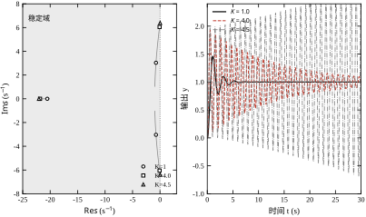
这张图给出三个直观结论，后面 §38.6 会把它们量化：
后面反复出现的示例对象 10/[s(s+2)]，其根轨迹尤其简单，值得先看一眼：s^2+2s+10K=0 的根恒为 s=-1\pm\mathrm{j}\sqrt{10K-1}，整条轨迹就是 s=-1 这条竖线。K 从 0.1 增大到 100，极点从 -1 竖直上升到 -1\pm\mathrm{j}31.6，始终不越界，只是越摆越快——增益在这条回路上只买振荡，不买速度（\sigma 恒为 1，t_s 恒为 4 s）。这也是 §38.4.1 “二阶没有上限”的几何形象。
本章的两个判据围绕同一组问题展开，只是分别面向连续域与离散域。
前两个问题由 Routh 表直接回答，第三个问题靠一个变量替换的技巧回答（§38.6），这也是本章在工程上最有价值的部分之一。
这三个问题不是随手列的，它们对应设计流程的三个阶段。第一个在建模完成后立刻要答，答错则后面全部作废；第二个在选工作点之前要答，它给出“还能加到多大”；第三个在验收之前要答，它把“稳定”细化为“衰减够快”。少答一个，就会出现本章开头那种情形：稳定判对了，余量没算，性能没核，设备照样出事故。
三者的答案形态也不同，这一点直接决定了报告能不能被复核。第一个是“稳定／临界／不稳定，右半平面 m 个根”；第二个是一个区间加一个边界频率；第三个是一个数（\sigma_{\max}，或允许的最大增益）。只写“稳定”两个字，别人无法复核；写出 m 与区间，拿计算器就能验。
§38.2 建立 Routh-Hurwitz 判据与 Jury 判据的数学表述，包括两种特殊情形（首元为零、整行为零）；§38.3 把它固化成七步设计流程；§38.4、§38.5 用本书的统一示例对象在连续域与离散域各算一遍；§38.6 把“稳定”升级为“相对稳定”；§38.7、§38.8 讨论系数误差与参数怎么调；§38.9 给出区间多项式、Kharitonov 等改进；§38.10 落到数值精度与现场实施；§38.11 说明判据的边界；§38.12 给出可复现代码。
如果只能记住一句话：Routh-Hurwitz 判据的价值不在“判稳”，而在“把稳定条件写成关于参数的代数不等式”，让设计者在画图之前就知道增益能取多大、余量还剩多少。
阅读路径建议：要立刻上手算增益区间的，读 §38.1.3、§38.2.2、§38.3、§38.4；做数字控制器的，加读 §38.5 与 §38.10.3；关心鲁棒性的，读 §38.7、§38.9。
本节的目标是把“所有根在左半平面”这个几何条件，翻译成一组只涉及系数的代数不等式。先给必要条件（能快速筛掉一半错误），再给充分必要条件（Routh 表），最后处理两个会让表格“算不下去”的特殊情形。离散域的 Jury 判据在 §38.2.6 平行展开。
两条线索要分开记：必要条件是筛子，Routh 表是尺子，Jury 判据是同一把尺子在单位圆上的版本。筛子只用来省时间，永远不能当作结论；尺子给出的是“根在哪一侧”和“有几个在右侧”，不是一个笼统的“合格”。混用这两者，就会出现 §38.2.1 那个反例的翻版——四个系数全正，却有一对根在右半平面。
设特征多项式为式 (38-2)，首项系数已归一化为 a_n>0。若它的全部根实部为负，则所有系数必须同号，即
a_i>0,\qquad i=0,1,\ldots,n \tag{38-3}
理由很直接：负实根贡献因子 (s+\sigma)、\sigma>0，共轭复根贡献 (s+\sigma)^2+\omega^2，两者展开后系数全为正，而正系数多项式相乘仍是正系数多项式。反过来，只要出现一个负系数或零系数，立刻可以判定不稳定（零系数对应缺项，缺项时若缺的不是常数项，往往意味着有一对纯虚根或右半平面根）。
这条必要条件的工程价值在于成本极低：现场拿到一组辨识系数，先看一眼符号，几秒钟就能排除一批“看起来能调、其实怎么调都不稳”的结构。它也是后面 §38.3 的第一步。
但必要条件不是充分条件。经典反例是
D(s)=s^3+s^2+s+6 \tag{38-4}
四个系数全为正，把它分解可得 D(s)=(s+2)(s^2-s+3)，后一个因子在 s=(1\pm\mathrm{j}\sqrt{11})/2 处为零，右半平面有一对根。必须用 Routh 表才能发现。
这个反例值得多看一眼，因为它说明了“全正”到底约束了什么。三项系数对应根的基本对称函数：\sum s_i=-1、\sum s_is_j=1、s_1s_2s_3=-6。根之积为负，要求实根中负的个数为奇数；根之和为负，要求这些实根的总和足够负。两件事可以同时满足——本例的实根是 -2，另一对根是 1\pm\mathrm{j}1.658，和为 -1、积为 -6，全部对得上。系数全正只保证“对称函数同号”，不保证“根都在左侧”，因为对称函数对根的位置不敏感：一个右半平面的复根对，配上一个足够左的实根，就能拼出全正的系数。
由此可以读出这条必要条件的三条实用推论。第一，二阶时它是充分的：s^2+a_1s+a_0 全正意味着 \zeta\omega_n>0、\omega_n^2>0，直接给出两个左半平面根。这解释了一个常见混淆——“二阶看符号就够”是对的，“三阶看符号就够”是错的。第二，三阶及以上缺项直接出局：缺项就是某个系数为零，已经违反必要条件，不必往下算；其机理是缺项往往伴着一对纯虚根，§38.7.3 会用 s^3+2s+22 的实测说明，缺了速度项之后并不是“振而不散”，而是“振着散”。第三，判符号之前必须把首项化为正：D(s)=-s^2-2s-10 的系数“全负”，与 s^2+2s+10 是同一个方程，若不先乘 -1 就会误判为不稳。这一步在程序里对应“除以 a_n”，在手算里对应“两边乘 -1”，漏掉的人不少。
把式 (38-2) 的系数按奇偶次排成两行，作为 Routh 表的第 1、2 行：
\begin{array}{c|cccc} & & & & \\ s^n & a_n & a_{n-2} & a_{n-4} & \cdots \\ s^{n-1} & a_{n-1} & a_{n-3} & a_{n-5} & \cdots \end{array} \tag{38-5}
第 3 行起，每个元素由前两行左上角的 2\times2 行列式算出，规则统一为“上一行左邻元素乘本行上方元素、减去两行首元素交叉乘积，再除以上一行首元素”：
b_1=\frac{a_{n-1}a_{n-2}-a_na_{n-3}}{a_{n-1}},\qquad b_2=\frac{a_{n-1}a_{n-4}-a_na_{n-5}}{a_{n-1}} \tag{38-6}
后续各行同法递推，直到只剩一列。表中第一列记为 (c_1,c_2,\ldots,c_{n+1})。
Routh-Hurwitz 判据：特征多项式全部根在左半平面，当且仅当第一列元素全部非零且同号（通常归一化为全正）。第一列符号变化的次数等于右半平面根的个数（按重数计）。
这条判据有三点必须说清。
第一，只与第一列有关。表格其余元素只是递推的中间量，判稳时不必关心；但它们在特殊情形下决定是否要引入辅助多项式。
第二，符号变化次数等于右半平面根数，这比“稳定/不稳定”二值结论有用得多。算出“右半平面有 2 个根”，就能判断系统自振来自哪一对极点，而不只是知道“坏了”。
第三，系数必须是实数且首项正。若首项为负，先整体乘 -1；若含复系数（极少数含复参数的情形），判据不适用。
Routh 表与 Hurwitz 行列式是等价的两种表述：Hurwitz 判据说的是 n 个顺序主子式全正，理论价值在于给出显式不等式，工程上则用 Routh 表递推更快、更不易算错。图 38-2 给出表的结构与递推路径，注意每一行的元素个数递减，且空缺处补零不影响结论。
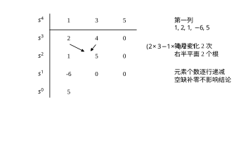
理解这张表为什么能判稳，有一个不涉及复变函数的入口：把多项式按奇偶拆开，Routh 递推就是两个多项式在做辗转相除。
写 D(s)=D_e(s^2)+sD_o(s^2)，其中 D_e、D_o 分别只含偶次项与奇次项。Routh 表的第一、二行正是这两个多项式的系数；第三行及以后，等价于对 D_e 与 D_o 连续做带余除法，每一行是上一次除法的余式（首元已归一），第一列则记录每次除法的首项系数。辗转相除的符号变化次数等于 D_e/D_o 在实轴上的 Cauchy 指标，而这个指标经 s=\mathrm{j}\omega 映射后恰好等于右半平面根数。“数符号变化”不是经验规则，而是 Sturm 定理的一个特例。
这个视角解释了两件原本像“技巧”的事。第一，首元为零为什么会让递推中断：商的首项系数为零，相当于除数为零，算法本身失效——所以需要 \varepsilon 或乘正因子把除法“救”回来（§38.2.4）。第二，整行为零为什么可以用辅助多项式求导：整行为零意味着两个多项式在此处有公因式，而公因式的根正是对称根（纯虚根，或关于原点对称的实根），求导相当于用公因式的导数跳过这一行，继续往下除（§38.2.5）。
工程上不必每次都想这一层，但它能在两种场合帮上忙：判据实现出 bug 时，知道该往“除法链”上找；遇到特殊情形时，知道 \varepsilon 法与求导法都不是凑出来的，而是让辗转相除继续下去的手段。
工程上七成以上的回路模型不超过三阶，把这两档的结论背下来，多数场合可以不算表直接判。
三阶 a_3s^3+a_2s^2+a_1s+a_0=0（a_3>0）的全部根在左半平面，当且仅当
a_2>0,\quad a_1>0,\quad a_0>0,\quad a_2a_1>a_3a_0 \tag{38-7}
最后一项是最容易被忽略的“内项积大于外项积”，它等价于 K 有一个上限。式 (38-7) 对设计极有用：把 a_i 含 K 的表达式代入，直接得到 K 的区间。
四阶 a_4s^4+a_3s^3+a_2s^2+a_1s+a_0=0 的条件是
a_3a_2>a_4a_1,\qquad a_3a_2a_1>a_3^2a_0+a_4a_1^2 \tag{38-8}
两个不等式中任意一个被破坏都会失稳，前者对应高频振荡，后者对应低频振荡，物理含义不同，这为 §38.7 讨论“哪个参数该退”提供了依据。
把 §38.4.3 的四阶对象在 K=2.2 处具体算一遍，可以看到表格在实际系数下长什么样。此时的系数为 0.001,\,0.072,\,1.14,\,2,\,22，列表如下：
\begin{array}{c|ccc} s^4 & 0.001 & 1.14 & 22 \\ s^3 & 0.072 & 2 & 0 \\ s^2 & 1.1122 & 22 & 0 \\ s^1 & 0.5758 & 0 & 0 \\ s^0 & 22 & 0 & 0 \end{array}
第一列 0.001,\,0.072,\,1.1122,\,0.5758,\,22 全为正，判稳。用数值求根核对，四个极点为 -49.69、-21.81 与 -0.253\pm\mathrm{j}4.499，确实全在左半平面。这里有一个容易被忽视的细节：s^1 行的 0.5758 不是“随便一个中间量”，它是该组系数距离失稳还剩多少的度量。把 K 从 2.2 往上加，这个数单调下降，到 K\approx3.09 时归零，系统进入等幅振荡——这正是 §38.4.3 算出的 K_{\max}。
这个 0.5758 还可以写得更明确。记式 (38-8) 两个不等式的余量分别为 R_1=a_3a_2-a_4a_1 与 R_2=a_3a_2a_1-a_3^2a_0-a_4a_1^2，把 Routh 递推展开一层就能看出
\text{$s^1$ 行首元}=\frac{R_2}{R_1}=\frac{0.046112}{0.080080}=0.5758 \tag{38-8a}
也就是说，四阶的 s^1 行元素是两个余量之比：分子决定“低频失稳还差多少”，分母决定“高频失稳还差多少”。这解释了为什么两个不等式在工程上的分量并不对等——只有当分子先归零时，s^1 行才变号；若分母先归零，表格会进入“首元为零”的特殊情形（§38.2.4），失稳形态也完全不同。本例中 R_1 不含 K（0.072\times1.14-0.001\times2=0.08008），把 K 加到 3.0895 时 R_2 先归零而 R_1 仍是 0.08008，所以越界时出现的是一对纯虚根 \pm\mathrm{j}5.2705，另两个根落在 -49.56 与 -22.44——一对慢振荡配两个快实根，正是“低频失稳”的实际含义。\omega=5.2705 也不必解四次方程：把 s=\mathrm{j}\omega 代入特征式，虚部为零给出 \omega=\sqrt{a_1/a_3}=\sqrt{2/0.072}=5.2705，与数值求根完全一致——这正是 §38.4.4 讲整行为零时用辅助多项式求 \omega_{osc} 的另一种算法。
三阶情形更直观。对式 (38-18) 列 Routh 表，s^1 行的元素为
\frac{1.1\times2-0.05\times10K}{1.1}=2-\frac{K}{2.2}
K=2.2 时它恰好等于 1.0，K=4.4 时归零。也就是说，第一列元素本身就是余量的线性度量，单位与增益相同。工程上完全可以把“s^1 行还剩多少”直接读成“增益还能加多少”，不必等到符号翻转才知道到了边界。这条观察是 §38.6 相对稳定度的起点：既然第一列元素随参数连续变化，就可以反过来用它定义“离边界多远”。
递推时若某一行的第一个元素为零，而该行并非全零，除法无定义，表格算不下去。处理办法有两种。
办法一（\varepsilon 法）：把零换成充分小的正数 \varepsilon，继续递推，最后令 \varepsilon\to0^+ 看第一列符号。它的严格性依赖极限过程，手算时容易在 \varepsilon 的符号上出错，因此只适合教学演示。
办法二（乘正因子法）：把该行整体乘以一个正数（例如首元为零时，直接看下一个非零元素，或对该行施加 s\to s+\delta 的小位移后再算）。由于乘正数不改变第一列的符号变化次数，结论不受影响。工程实现中更常用的做法是用本章代码里的 routh_table 函数（参数 eps），取 \varepsilon=10^{-8}\cdot\max|a_i|，并在结果旁边标注“临界”。
需要强调的是：首元为零往往意味着存在纯虚根或对称根，此时系统多半处在稳定边界上，判为“临界稳定”最安全，不要因为 \varepsilon 取得巧而得出“稳定”。
手算时最容易出错的是“首元为零但该行不全为零”这一种。取
D(s)=s^4+2s^3+2s^2+4s+1
四个系数全正，必要条件通过。列表时，s^2 行的第一列恰好算成零，但第二个元素是 1：
\begin{array}{c|ccc} s^4 & 1 & 2 & 1 \\ s^3 & 2 & 4 & 0 \\ s^2 & 0 & 1 & 0 \\ s^1 & \multicolumn{3}{c}{\text{待定}} \end{array}
此时不能把整行划掉（那等于丢掉了 1 这个信息，结论会变成“稳定”），而应把首元换成 \varepsilon 继续：s^1 行的首个元素含 -1/\varepsilon 项，取 \varepsilon=10^{-10} 时是一个绝对值达 10^{9} 量级的负数。第一列于是变成 +,\,+,\,+,\,-,\,+，符号变化两次，判定右半平面有两个根。数值求根给出 0.0933\pm\mathrm{j}1.366 与 -1.907、-0.280，与判据完全一致。
这个例子说明两件事。第一，首元为零与整行为零是两类不同的问题：前者只是除法失效，后者才是对称根出现；把两者混为一谈，会在前者上误判为临界、在后者上误判为稳定。第二，\varepsilon 的取值不影响符号变化次数，只要它足够小且为正；手算时可以取 10^{-6} 量级，不必追求精确值，但必须写明“此处用 \varepsilon 代替零”，否则复核的人无法判断这一步是否漏算。
若某一行全为零，说明存在对称于原点的根，例如 s=\pm\mathrm{j}\omega（等幅振荡），或 s=\pm\sigma（一正一负实根）。此时用该行的上一行构造辅助多项式
A(s)=c_1s^{k}+c_2s^{k-2}+c_3s^{k-4}+\cdots \tag{38-9}
其中 k 是该上一行对应的 s 的幂次，系数就是该行元素。将 A(s) 对 s 求导得 A'(s)，用 A'(s) 的系数替换全零行，继续递推。
整行为零是最强的失稳信号：它意味着系统恰好在虚轴上有一对极点（或存在关于原点对称的实根对），任何参数漂移都会让系统进入发散或持续振荡。工程上遇到整行为零，正确的处理不是“补一行算完”，而是立刻报告“该参数组合处于稳定边界”，然后退回设计，把增益降到边界的 50% 以下。
“对称根”有两种，后果不同，值得分开说。一种是共轭虚根 \pm\mathrm{j}\omega，对应等幅振荡，响应不收敛也不发散；另一种是对称实根 \pm\sigma（一个在左、一个在右），对应指数发散，比等幅振荡严重得多。两者的区别直接体现在辅助多项式上：把 A(s) 的系数按奇偶拆开，若只有偶次幂有非零系数，A(\mathrm{j}\omega) 是实数，根必为纯虚或纯实；再看 A(s) 的根——若求出的是 \pm\sigma（\sigma>0 实数），就是对称实根，此时系统已经在发散，只是 Routh 表的这一行暂时“看不见”。手算时若辅助多项式是 s^2-4 这样的形式，立即判发散，不必继续往下算。
辅助多项式求导后替换全零行，这一步的形式可以记住：若 A(s)=c_1s^k+c_2s^{k-2}+\cdots，则 A'(s)=kc_1s^{k-1}+(k-2)c_2s^{k-3}+\cdots，替换行的首元是 kc_1。这解释了一个常见疑问——为什么替换后表能继续算：k 是偶数，kc_1>0，首元必定与 c_1 同号，符号信息没有丢，只是“乘以了阶数”。本例 A(s)=s^2+2，k=2、c_1=1，替换行首元为 2，与式 (38-23) 中 s^1 行的 2 对得上。
辅助多项式还额外提供一条有用信息：解 A(s)=0 可以直接得到虚轴上的根，进而得到临界振荡频率 \omega_{osc}。这个频率在现场很有用——它往往就是实测振荡曲线的频率，可用来反推是哪一个环节造成了振荡。求 \omega_{osc} 也不必真的解方程：把 s=\mathrm{j}\omega 代入 A(s)，实部为零给出 \omega^2 的一次方程，解出即得。本例 A(\mathrm{j}\omega)=-\omega^2+2=0，\omega=\sqrt2=1.414，一行算式完成。
数字控制器的闭环特征方程是 z 的多项式
D(z)=a_nz^n+a_{n-1}z^{n-1}+\cdots+a_1z+a_0=0,\qquad a_n>0 \tag{38-10}
稳定条件是全部根位于单位圆内。Jury 判据把它翻译成 2n-1 个不等式，构造方式与 Routh 表类似，但“交叉相乘”的方式不同。
先把系数排成两行，第二行是第一行的逆序：
\begin{array}{c|ccccc} z^0 & a_0 & a_1 & \cdots & a_{n-1} & a_n \\ z^n & a_n & a_{n-1} & \cdots & a_1 & a_0 \end{array} \tag{38-11}
第三行由前两行算出，元素为 2\times2 行列式：
b_k=\begin{vmatrix} a_0 & a_{n-k} \\ a_n & a_k \end{vmatrix}=a_0a_k-a_na_{n-k},\qquad k=0,1,\ldots,n-1 \tag{38-12}
第四行再取逆序，如此交替，直到只剩三个元素。判据为：
D(1)>0,\qquad (-1)^nD(-1)>0,\qquad |a_0|<a_n, \tag{38-13}
以及后续每一对
|b_0|>|b_{n-1}|,\qquad |c_0|>|c_{n-2}|,\qquad \ldots \tag{38-14}
全部成立时，根全部在单位圆内。
前两条是“实轴上的根”条件：z=1 与 z=-1 是单位圆与实轴的两个交点，D(1) 与 D(-1) 的符号分别约束低频与高频模态。第三条 |a_0|<a_n 约束根的模之积：由韦达定理 \prod|z_i|=|a_0/a_n|，若乘积的绝对值已不小于 1，必有根在圆外或在圆上。后面各条逐层收紧。
式 (38-12) 的构造方式是“反转、错位、相减”：把一行系数与其逆序并排，取全部错位乘积之差，行数因此每步减一。以本章 §38.5.6 的三阶闭环 D(z)=z^3-1.91308z^2+1.166778z-0.096960 为例，升幂写为 (-0.096960,\,1.166778,\,-1.91308,\,1)，则
\begin{aligned} b_0&=a_0^2-a_3^2=0.009401-1=-0.990599\\ b_1&=a_0a_1-a_3a_2=-0.113130+1.913080=1.799950\\ b_2&=a_0a_2-a_3a_1=0.185492-1.166778=-0.981286 \end{aligned} \tag{38-12a}
b 行长度由 4 减到 3，再对 b 行做同样运算得 c_0=0.018364、c_1=-0.016763，长度减到 2，递推终止。三阶一共 2n-1=5 个条件：D(1)>0、(-1)^nD(-1)>0、|a_0|<a_3、|b_0|>|b_2|、|c_0|>|c_1|。逐条代入：D(1)=0.1567、(-1)^3D(-1)=4.1768、0.0970<1、0.9906>0.9813（差 0.0093）、0.0184>0.0168（差 0.0016），全过。注意最后两级差值已经在千分位，这不是“通过”而是“贴着边界通过”——同一组条件给出的是五个数，而不是一个布尔值，这正是 Jury 判据在离散域里比 Routh 更好用的地方：它天然给出分级裕度。
Jury 判据的一个实用变体是只用必要条件的快速筛查：式 (38-13) 的三条只需三次求值，成本极低，能筛掉大部分明显不稳定的参数组合。现场整定时，先用这三条定出粗略区间，再用完整判据或数值求根确认。
Jury 表在 n\ge4 时手算量很大，而且每一行的元素是行列式，容易出错。工程上更常用的是另一条路：用双线性变换把单位圆内部映射成左半平面，然后直接套 Routh。
取
z=\frac{1+w}{1-w}\quad\Longleftrightarrow\quad w=\frac{z-1}{z+1} \tag{38-15}
当 z=\mathrm{e}^{\mathrm{j}\omega T_s} 时，w=\mathrm{j}\tan(\omega T_s/2)：单位圆精确映射为虚轴，圆内映射为左半平面，圆外映射为右半平面。这是精确的一一映射，不是近似，因此用它判稳不会引入误差——这一点常被误解为“双线性变换会畸变频率所以不能用于判稳”，其实畸变的是频率刻度，不是稳定性归属。
把这句话验一遍只需半步代数。令 z=\mathrm{e}^{\mathrm{j}\theta}（\theta=\omega T_s），则
w=\frac{\mathrm{e}^{\mathrm{j}\theta}-1}{\mathrm{e}^{\mathrm{j}\theta}+1} =\frac{\mathrm{e}^{\mathrm{j}\theta/2}-\mathrm{e}^{-\mathrm{j}\theta/2}}{\mathrm{e}^{\mathrm{j}\theta/2}+\mathrm{e}^{-\mathrm{j}\theta/2}} =\mathrm{j}\tan\frac{\theta}{2} \tag{38-15a}
分子分母同乘 \mathrm{e}^{-\mathrm{j}\theta/2} 得到第二个等号，这一步把“两个复指数之差”化成了“两倍正弦”，实数性一目了然：w 是纯虚数，模等于 |\tan(\theta/2)|。\tan(\theta/2) 在 \theta\in(-\pi,\pi) 上单调，所以映射是一一对应的；\theta\to\pm\pi（z\to-1）时 |w|\to\infty，这正是下文第三个实现细节中“z\approx-1 附近的根跑到 w 的远处”的来源。反过来，|z|<1 等价于 \mathrm{Re}\,w<0：圆内圆外的归属由 \mathrm{Re}\,w 的符号唯一决定，与 |\tan(\theta/2)| 的具体数值无关——这就是“频率刻度畸变不影响稳定性判断”的完整理由。
代入后两边同乘 (1-w)^n 是合法的，因为 w=1 对应 z\to\infty，不是多项式的根，乘上去不引入伪根、也不改变根的归属。这个变换在复变函数里叫 Möbius 变换，它把 z 平面上的圆映射成 w 平面上的圆或直线；单位圆恰好映射为虚轴这条“半径无穷的圆”。
把 z=(1+w)/(1-w) 代入 D(z)，两边乘以 (1-w)^n 得 w 的多项式 \tilde D(w)，对 \tilde D(w) 列 Routh 表即可。三个实现细节必须注意：
图 38-3 给出同一组参数下 z 平面与 w 平面的对应关系，以及 T_s 变化时闭环极点的迁移路径。图中可以直观看到：采样周期加大时，极点沿某种螺旋向单位圆靠近，稳定裕度被采样“吃掉”。
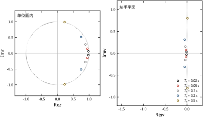
Routh 与 Jury 不是两套理论，而是同一判据在两个域中的表述：前者判左半平面，后者判单位圆内。二者的对应关系可以概括成三点。
表 38-1 给出选用建议。这张表是 §38.5 的入口，也是现场脚本（§38.12）里 routh_report 函数的分支依据。
| 场景 | 推荐判据 | 理由 |
|---|---|---|
| 连续域，n\le3，求参数区间 | Routh（显式不等式） | 可直接解出 K 的上下界 |
| 连续域，n\ge4，单点判稳 | Routh | 计算量小，符号变化次数可用 |
| 离散域，n\le3 | Jury 必要条件 + 完整判据 | 手算可行 |
| 离散域，n\ge4 | 双线性 + Routh | 避免大量行列式 |
| 需要右半平面/圆外根个数 | Routh（连续）或双线性 + Routh | Jury 不直接给个数 |
| 系数含区间误差 | Kharitonov（§38.9） | 判据只适用确定系数 |
把 §38.2 的判据用起来，只需七步。这七步的顺序不是随意的：先做便宜的必要条件筛查，再做需要动笔的表格，最后才做仿真验证，能把大部分无效计算省掉。图 38-4 给出流程，其中带判断框的两个位置是实际项目里最常出错的环节。
七步里最容易混淆的是第 5 步与第 6 步的分工：第 5 步算“增益最多能到多大”，是一个纯数学问题；第 6 步判“实际该取多少”，要同时考虑性能、系数误差与工况变化。把两步合成一步，就会出现“算出 4.4 就取 4.4”这种典型错误——边界值只是“还没发散”，从来不是“可以工作”。
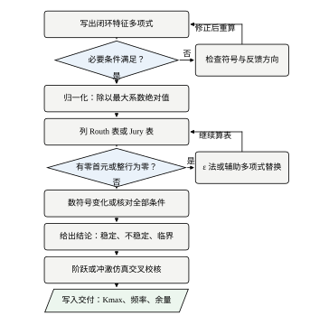
从开环传函 G(s)H(s)=N(s)/D_{ol}(s) 出发，闭环特征多项式为
D_{cl}(s)=D_{ol}(s)+N(s) \tag{38-16}
这一步有两个常见错误。其一是漏掉反馈通道的动态：若传感器带一阶滤波 H(s)=1/(0.05s+1)，必须先通分成 G(s)/[1+G(s)H(s)] 的形式，不能把 H 当成 1 处理。其二是符号方向搞反：正反馈时是 D_{ol}-N，减号的位置一变，稳定区间完全不同。
写完后统一成降幂、首项为正的形式，并把所有系数按量纲整理为同一数量级——这一步是为第五步解不等式做准备，也是防止 Routh 表里出现 10^{12} 与 10^{-3} 同表的原因。
多项式乘法的手算顺序值得固定下来：先把每个环节化成 (\tau s+1) 的连乘，再逐次两两相乘，每次只保留当前阶次。以式 (38-21) 为例，先算 s(s+2)=s^2+2s，再算 (0.05s+1)(0.02s+1)=0.001s^2+0.07s+1，最后相乘得 0.001s^4+0.072s^3+1.14s^2+2s。若反过来先把三个环节展开再乘 s，中间会出现 s^5 项，虽然最后消掉，但手算时极易漏项。
首项归一化也有讲究。式 (38-18) 除以 0.05 得 s^3+22s^2+40s+200K，K=4.4 时系数最大最小之比为 880，仍在手算舒适的范围内。跨度真正失控出现在高阶对象上：§38.9.1 里七个 1/(s+2) 串联展开成七阶，系数从 10^{-13} 跨到 2.0，同一张表里既有百分之一也有百亿分之一。判据本身对正数缩放不变（乘正数不改变根的符号），但递推过程的舍入误差会随跨度放大，所以数值实现要么先归一化、要么逐行缩放（§38.9.1）。手算时统一到“首项为 1、时间用秒”最省事。
检查系数是否全部为正（式 38-3）。出现负系数或零系数就停下来：先确认是不是符号写错，若确实如此，则该结构在当前参数下无论如何都不稳。
这一步还能暴露一类结构性问题：常数项为零意味着有一个积分环节未被闭环包围，系统对常值扰动无静差但也无法稳定在任意工作点；某个中间次项为零意味着有纯虚根或对称根。这两种情况都不必再算表。
筛查可以做成两个固定动作。其一，看常数项：a_0=0 说明环路里有积分没被反馈包住（把开环多项式直接当闭环用的典型症状），a_0<0 说明环路符号错或增益取了负值。其二，看缺项：a_i=0 而 a_{i\pm1}\ne0，根必然落在虚轴上或关于虚轴成对出现。真实对象的系数几乎不可能“恰好”为零，所以出现零只可能是结构性错误或录入错误。
只有一处需要动手改：首项为负时先整体乘 -1。D(s)=-s^2-2s-10 三个系数全负，乘 -1 后全正，根为 -1\pm\mathrm{j}3，系统稳定；不乘就按“有负系数”判不稳，结论正好反了。
同时要记住这条路走不通的地方。系数全正是必要条件，三阶以上不能凭它下结论：D(s)=s^3+s^2+s+6 四个系数全正，Routh 表第一列却是 1,\,1,\,-5,\,6，有两处变号。所以第二步通过只代表“可以继续”，不代表“已经稳定”；它的产出应写成“K>0 时系数全正，进入第三步；K<0 时 a_0<0，排除”，这句话在第七步归档时可以直接抄用。
按式 (38-5)、(38-6) 递推。手算时建议把每一行通分后的分数保留三位有效数字，并在行首标注该行对应的 s 幂次——它在处理整行为零时要用来写辅助多项式。
填表有三条手算规范，照做能省掉大半的返工。其一，行数固定为 n+1：s^n 到 s^0 每行一个，缺项补零，不要因为某行“后面全是零”就省略——省略之后下标全错。其二，整行可以乘正数：出现 1.1122 这类小数时，整行乘 0.072 化成 (0.0801,\,1.584) 更好算，结论不变（乘正数不改变符号变化次数），但要在草稿上注明乘了多少。其三，每一步只算第一列够用的项：手算判稳并不需要整张表，只需要每行的首元，而首元只与前两行的前两列有关。
把四阶对象 K=2.2 的两行中间量手算一遍，可以看到这套规范的实际用法。s^2 行首元为
\frac{0.072\times1.14-0.001\times2}{0.072}=\frac{0.08008}{0.072}=1.1122
s^1 行首元为
\frac{1.1122\times2-0.072\times22}{1.1122}=\frac{0.64044}{1.1122}=0.5758
两式都只需两列，第三列起全是零填充。整张表四行、八次乘除，比解四次方程省得多，而且每一步都能复核。
若出现首元为零且该行非全零，按 §38.2.4 用 \varepsilon 法或乘正因子法处理，并在结论中注明“临界”；若出现整行为零，按 §38.2.5 写辅助多项式、求导、替换后继续，同时记录辅助多项式的根作为边界振荡频率。
第一列全正即稳定；出现符号变化，变化次数就是右半平面根数。把结论写成“稳定 / 临界 / 不稳定（右半平面 m 个根）”三种之一，不要只写“稳定/不稳定”，因为临界状态在现场的处理方式与真不稳定完全不同：临界要做的是降增益、加阻尼，真不稳定则要查接线与符号。
数符号变化有两条容易含糊的规则。第一，只数相邻非零元素之间的变号，零本身不带符号；但首元为零的情形在第三步就应当已经转入特殊处理，所以正常读表时第一列不应出现零——出现零说明前一步漏了。第二，\varepsilon 参与比较时按“极小正数”排队，不要把它当零跳过。§38.2.4 的例子最典型：第一列读作 +,\,+,\,+,\,-1/\varepsilon,\,+，\varepsilon\to0^+ 时第四项是一个绝对值极大的负数，于是 + 到 - 变一次、- 回到 + 再变一次，共 2 次变化，判“两个右半平面根”，与数值求根得到的 0.0933\pm\mathrm{j}1.366 完全对上。若把含 \varepsilon 的那一项当成零跳过，只剩 +,\,+,\,+,\,+ 四次同号，就会误判为稳定——同一个表，读法不同，结论正好相反。
根数 m 也不只是学术兴趣。m=2 通常意味着一对共轭复根越界（振荡发散），m=1 通常是一个实根越界（单调发散），两者的现场表现与处置完全不同：前者先查增益与延迟，后者先查反馈符号与积分饱和。所以第四步的产出应当是“不稳定，m=2，估计为一对复根越界”，而不是一句“不稳定”。
这是本章最有价值的一步。以增益 K 为例，把 D_{cl} 的系数写成 K 的一次或二次函数，Routh 表第一列就变成含 K 的表达式，令其全正得到一组不等式，解出 K 的可行区间 [K_{\min},K_{\max}]。
对最常见的三阶结构（式 38-7），这一步退化为一个线性不等式，手算即可；四阶结构（式 38-8）是两个不等式，用符号计算或数值求根都很快。区间解出来后，一定要检查下界：某些结构存在 K_{\min}>0，即增益太小反而不稳（多见于含不稳定极点的对象，如 §38.7.4 的 1/(s-1)），这时不能默认“越小越安全”。
当可调参数不止一个时，这一步会从“解区间”变成“解区域”。两个参数时可以在平面上画出边界曲线（§38.9.3 的 D-分解），三个以上时通常固定其中两个、对第三个扫描，把结果做成表格或等值线图。无论哪种，原则相同：先把边界画出来，再在里面选工作点，而不是先选工作点再验证。
工程上不取边界值。推荐把工作点取在 K_{\max} 的 50%–70%，理由在 §38.8 详述；取完工作点后，用阶跃仿真核对超调与调节时间是否满足第 37 章的口径要求。这一步的意义在于：稳定只是及格线，边界附近的系统虽然稳定，但阻尼极小、超调极大，往往过不了性能验收。
50%–70% 不是一句经验口号，它对应两条可算的约束。其一是增益裕度：20\lg0.5=-6.0 dB、20\lg0.7=-3.1 dB，多数行业规范要求 6 dB，所以 50% 是“合规线”，70% 只在系数非常准时才允许。其二是系数不确定度：§38.7.2 给出 \pm15\% 的系数误差会让 K_{\max} 本身偏 \pm30\%，取 50% 恰好把这段不确定度留在工作点外面。
这个推荐区间也有前提：它假设性能约束不紧、边界主要由增益决定。本例恰好相反——50% 工作点的 M_p 已达 71.4%，真正可行的是 K/K_{\max}=6.8\%。所以第六步的正确写法不是“取 50%”，而是“取满足性能的最大 K，再核对其余量是否覆盖系数与延迟的不确定度”。安全系数是结果，不是出发点。
交付文档里应记录三样东西：结构（阶次、零点、延迟）、K_{\max} 的数值及其推导依据、当前工作点距边界的百分比。现场调试时若发现振荡，第一个动作就是查这三项，而不是盲目降增益——降增益只对“接近上界”的情形有效，对“延迟被低估”或“传感器滤波被改动”的情形无效。
这三样必须绑在一起写，单独一个 K_{\max} 没有意义：换成 20 ms 传感器滤波，同一个 4.40 就变成 3.09。建议写成一行可复算的记录——“结构：三阶（执行器 50 ms）→ 系数 (0.05,\,1.1,\,2,\,10K) → K_{\max}=4.40、\omega_{osc}=6.32 rad/s → 工作点 K=0.3，占边界 6.8%”。任何人拿到这一行都能在几分钟内复算；结构变更时，也能立刻看出该重算哪一项。
“距边界的百分比”还要写清基准，否则同一件事会有两个名字。K=0.3 对 K_{\max}=4.40 既可以说“占边界 6.8%”，也可以说“还有 93.2% 的余量”——前者顺着设计者的思路，后者顺着“还能加多少”的思路，评审会上若各自默认一种，就会为一句正确的话争半天。写成“K/K_{\max}=6.8\%（余量 93.2%）”，两个数一起给，歧义就消失了。
图 38-4 的两个判断框对应的正是这两类失效：左边判断“必要条件是否满足”用来拦住符号错误，右边判断“是否存在零行/零首元”用来拦住临界状态被误判为稳定。
把七步完整走一遍。对象为 10/[s(s+2)] 串 50 ms 执行器滞后，控制器取纯比例 K，结构与 §38.4.2 相同，这里关注的是流程本身而不是新结论。
第一步，写出闭环特征多项式：
D(s)=0.05s^3+1.1s^2+2s+10K
已按降幂排列、首项为正。
第二步，必要条件。四个系数在 K>0 时全为正；K<0 时常数项为负，直接判不稳。于是负增益在第二步就被排除，不需要列表。
第三步，列 Routh 表：
\begin{array}{c|cc} s^3 & 0.05 & 2 \\ s^2 & 1.1 & 10K \\ s^1 & 2-\dfrac{K}{2.2} & 0 \\ s^0 & 10K & 0 \end{array}
第四步，读第一列。全正的条件是 K>0 且 2-K/2.2>0，即 0<K<4.4。后者就是 §38.4.2 的 K_{\max}，但这里是由流程自然得到的，没有背公式。
第五步，安全域为 (0,4.4)。下界恰好为零，说明该结构没有不稳定极点，增益再小也稳定，只是响应变慢；这一点与 §38.7.4 的 1/(s-1) 形成对照。
第六步，取 50% 工作点 K=2.2，做时域核对：M_p=71.4\%、t_s=8.45 s，远超 M_p\le20\% 的合同要求。把 K 降到 0.3，M_p=13.8\%、t_s=3.40 s 才合格。此时 K/K_{\max}=6.8\%，安全系数大得“浪费”，但这不是保守，而是被性能约束卡住的必然结果。
第七步，写进档案：结构为三阶（执行器 50 ms）；K_{\max}=4.4，\omega_{osc}=6.32 rad/s；工作点 K=0.3，占边界 6.8%；满载时两个机械时间常数变为 1.5 s 与 3 s，K_{\max} 必须重算（§38.1.1 的事故正出在这一条）。
这个算例最重要的结论在第六步：稳定域与性能域的交集才是可行域。只做到第五步就交付，等于把“不发散”当成了“能用”，后面的调试必然反复。
七步走错，通常不是数学不会，而是下面九件事之一。每条都给出本例的实际后果，便于对照自查。
九条里有五条（1、2、3、4、5）会让结论“错得整整齐齐”——算出来的数看着合理，只是与事实相反。这类错误最危险的地方在于不报错、不崩溃、不留痕迹。唯一的防线是把交叉核对做成习惯：同一结论至少用两条独立路径得到（解析式与数值扫描、Jury 与双线性、Routh 与 Bode 裕度）。
本节把 §38.3 的流程走四遍，对象逐步从“理想二阶”变成“带执行器滞后”、“带传感器滤波”、“含整行为零”。四遍的结论各不相同，但推导方式一样，读者可以把注意力放在“阶次增加时稳定域怎么缩”上。
四遍的顺序是刻意安排的：每一遍只增加一个环节，这样“稳定域缩了多少”就能直接归到那个环节头上，而不是笼统地归因于“阶次高了不好稳”。做完这四遍，再看 §38.7 的参数敏感性表，就会明白那张表里的每一行其实都是本节某一遍计算的“局部放大”。
沿用第 37 章的示例对象 G_0(s)=10/[s(s+2)]，控制器取纯比例 C(s)=K，单位反馈。闭环特征多项式为
D(s)=s^2+2s+10K=0 \tag{38-17}
按式 (38-3)，只需 10K>0，即 K>0。二阶系统的 Routh 表只有三行，第一列是 (1,\,2,\,10K)，只要 K>0 就全正，没有上限。这与解析结论一致：二阶闭环的阻尼比为 \zeta=1/\sqrt{10K}，K 增大时阻尼比单调减小但始终为正，极点始终在左半平面。
这个结论很容易被误用。现场有人说“二阶对象怎么加增益都不会振散”，前半句对、后半句错：K 增大到 100 时 \zeta=0.032，超调 90.5%，波形已经接近等幅振荡。但这里有一个常被忽略的细节——这条回路的 \sigma=\zeta\omega_n\equiv1 与 K 无关：2\zeta\omega_n=2 是 s 的系数，增益动不了它，所以极点始终沿 s=-1 这条竖线上下移动，衰减时间常数恒为 1 s，t_s\approx4 s 一动不动。增益在这条回路上只买振荡，不买速度。 判据只管“发不发散”，不管“能不能用”，这条界线在 §38.6 会正式给出。
把这条界线量化一下。二阶闭环的阻尼比与自然频率分别为
\zeta=\frac{1}{\sqrt{10K}},\qquad \omega_n=\sqrt{10K}
K 增大时 \omega_n 变大、\zeta 变小，两者朝相反方向走。按第 37 章的超调公式 M_p=\exp(-\pi\zeta/\sqrt{1-\zeta^2}) 逐点算：K=0.2 时 \zeta=0.707、M_p=4.32\%、t_s=4.22 s；K=0.5 时 \zeta=0.447、M_p=20.8\%；K=2 时 \zeta=0.224、M_p=48.6\%。若合同要求 M_p\le20\%，反解出 \zeta\ge0.456，对应 K\le0.48。
也就是说，这个回路的“能用”上限是 K\approx0.48，而“会发散”的上限是无穷大。两者相差的不是一个系数，而是问题的性质：前者由阻尼决定，后者由极点是否越过虚轴决定。Routh 表能回答后者，对前者一无所知。这正是 §38.6 要补的那块内容，也是工程上“判据通过、验收不过”的根源。
更关键的是，真实回路没有纯二阶。执行器有一阶滞后，传感器有滤波，传动有柔性和间隙。这些环节各自贡献一个极点，把阶次推到三阶、四阶，稳定域立刻出现上限。
在对象前串一个一阶执行器模型 1/(0.05s+1)（伺服阀或电流环的等效滞后，50 ms），特征多项式变成
D(s)=s(s+2)(0.05s+1)+10K=0.05s^3+1.1s^2+2s+10K=0 \tag{38-18}
按式 (38-7)，三阶稳定的条件是三个系数全正且内项积大于外项积：
1.1\times2>0.05\times10K\quad\Longrightarrow\quad K<4.4 \tag{38-19}
K_{\max}=4.4。边界处的振荡角频率由辅助多项式 1.1s^2+10K=0 解出：
\omega_{osc}=\sqrt{\frac{10\times4.4}{1.1}}=\sqrt{40}=6.32\ \mathrm{rad/s} \tag{38-20}
即约 1.0 Hz。把 K=4.4 代回式 (38-18) 求根，得到 s=\pm\mathrm{j}6.3246 与 s=-22，与式 (38-20) 完全吻合——这就是 Routh 表的价值：不用解三次方程，也能拿到边界频率。
表 38-2 给出 K 从 1 增到 4.5 时三个极点的位置。第三行开始，主导极点对的实部迅速趋近零，衰减时间常数从 1.36 s 拉长到 524 s，最后穿越虚轴。
| 增益 K | 主导极点 | 最大实部 | 衰减时间常数 (s) |
|---|---|---|---|
| 1.0 | -0.737\pm\mathrm{j}3.033 | -0.737 | 1.36 |
| 2.2 | -0.454\pm\mathrm{j}4.545 | -0.454 | 2.20 |
| 4.0 | -0.077\pm\mathrm{j}6.051 | -0.077 | 12.93 |
| 4.39 | -0.002\pm\mathrm{j}6.318 | -0.002 | 524 |
| 4.40 | \pm\mathrm{j}6.325 | 0 | 临界 |
| 4.50 | +0.019\pm\mathrm{j}6.391 | +0.019 | 发散 |
表 38-2 最值得注意的一行是 K=4.0：它还在稳定域内，最大实部却是 -0.077，意味着任何扰动要 13 s 才衰减到 37%。用第 37 章的口径测，此时超调与调节时间都早已不合格。图 38-5 把根轨迹与 K_{\max} 画在一起，左侧是极点随 K 的迁移路径，右侧是 K 接近边界时的阶跃响应。
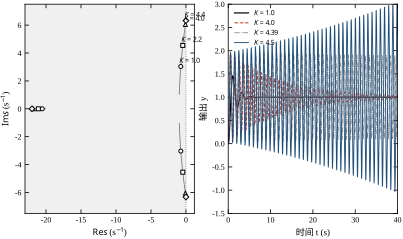
若编码器信号后接一个 20 ms 一阶滤波 1/(0.02s+1)（很常见的抗混叠处理），特征多项式变为
D(s)=s(s+2)(0.05s+1)(0.02s+1)+10K =0.001s^4+0.072s^3+1.14s^2+2s+10K \tag{38-21}
代入式 (38-8) 的两个不等式并解出 K，得 K_{\max}\approx3.09。两个不等式值得分别算一遍：第一个是 a_3a_2-a_4a_1=0.072\times1.14-0.001\times2=0.08008>0，与 K 无关，宽得很；第二个是 a_3a_2a_1-a_3^2a_0-a_4a_1^2=0.16416-0.05184K-0.004>0，即 K<0.16016/0.05184=3.0895。一个松、一个紧，这是四阶结构的常态：起决定作用的总是含 a_0 的那一条，因为它随增益线性下降，其余各项都是常数。与三阶的 4.4 相比，仅仅增加一个 20 ms 的滤波，稳定域就缩小了 30%。
这个结果与直觉一致但常被忽视：滤波器的转折频率 50 rad/s 看起来远高于关心的频段（K=2 时主导极点虚部约 4.5 rad/s），但它在 6.3 rad/s 的边界频率处已经贡献了 \arctan(0.02\times6.32)\approx7.2^{\circ} 的相位滞后，正好吃掉边界处的余量。第 41 章会用相位裕度解释同一件事，本章则给出更硬的结论：任何串入回路的动态环节都会缩小稳定域，判断影响大小不能看它的时间常数相对响应快慢，而要看它在穿越频率处的相位贡献。
取一个专门设计的四阶多项式
D(s)=s^4+s^3+3s^2+2s+2 \tag{38-22}
四个系数全正，必要条件通过。列 Routh 表：
\begin{array}{c|ccc} s^4 & 1 & 3 & 2 \\ s^3 & 1 & 2 & 0 \\ s^2 & 1 & 2 & 0 \\ s^1 & 0 & 0 & 0 \end{array} \tag{38-23}
s^1 行全为零，触发 §38.2.5 的处理。用上一行（s^2 行）构造辅助多项式
A(s)=s^2+2 \tag{38-24}
其根为 s=\pm\mathrm{j}\sqrt{2}=\pm\mathrm{j}1.414，正是一对虚轴极点。对 A(s) 求导得 A'(s)=2s，用系数 (2,0) 替换全零行后继续，第一列变为 (1,1,1,2,2)——全正，说明除这对虚根外，其余根都在左半平面。
这个例子有三个教学价值。第一，它说明“系数全正”确实不足以保证稳定，必须有 Routh 表才能发现虚根。第二，整行为零时，辅助多项式直接给出边界频率 \omega_{osc}=1.414 rad/s，现场的等幅振荡周期应为 4.44 s，可用来核对。第三，该多项式事实上可分解为
D(s)=(s^2+2)(s^2+s+1) \tag{38-25}
后一个因子给出 -0.5\pm\mathrm{j}0.866 的稳定极点，前一个因子给出虚轴极点。也就是说，系统里同时存在一个“会衰减的振荡模态”和一个“不衰减的振荡模态”，实测曲线应是两者的叠加：先看到 0.866 rad/s 的衰减振荡，稳定后剩下 1.414 rad/s 的等幅振荡。
这两件事在波形上可以分辨。两个频率之差为 1.414-0.866=0.548 rad/s，叠加后包络以 2\pi/0.548\approx11.5 s 为周期起伏；而衰减模态的时间常数只有 2 s，所以这种“拍”只在起始几秒看得见，之后只剩 1.414 rad/s 的等幅振荡。反过来用：若实测波形在 10 s 之后仍有明显起伏，说明还存在一个未建模的慢模态，此时不该调增益，而该去补模型。
图 38-6 给出这类临界系统的响应特征：阶跃输入下输出既不收敛也不发散，而是以固定振幅持续振荡，振幅由初始条件与输入共同决定。
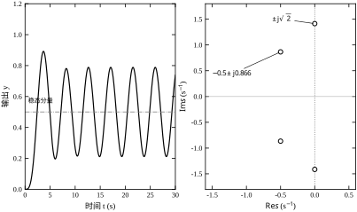
把四遍计算放在一起（表 38-3），可以看到一条清晰的规律：每增加一个极点，稳定域的上界就往下掉一截，且掉幅与新增环节在穿越频率附近的相位贡献正相关。
| 结构 | 阶次 | 附加环节 | K_{\max} | 相对上一行 |
|---|---|---|---|---|
| 10/[s(s+2)] | 2 | 无 | \infty | — |
| 加 50 ms 执行器滞后 | 3 | 1/(0.05s+1) | 4.40 | — |
| 再加 20 ms 传感器滤波 | 4 | 1/(0.02s+1) | 3.09 | -30\% |
| 惯性放大三倍（§38.1.1） | 4 | 时间常数变 1.5、3 | 1.04 | -66\% |
把每一档的穿越频率与相位贡献也算出来，规律会更清楚。三阶在 6.32 rad/s 穿越，此时执行器贡献 \arctan(0.05\times6.32)=17.6^{\circ}；四阶的穿越频率降到 5.27 rad/s（\omega=\sqrt{a_1/a_3}=\sqrt{2/0.072}），执行器贡献 14.8°、传感器贡献 6.0°，合计 20.8°。频率降了 17%，该处的开环幅值却从 0.2273 升到 0.3237，而 K_{\max} 恰是它的倒数：1/0.2273=4.40、1/0.3237=3.09。
这条关系是本章最实用的速算工具：K_{\max} 就是边界频率处开环幅值的倒数，不必先列完整张表。它也把本章与第 41 章接上了——20\lg K_{\max} 正是增益裕度，三阶 12.9 dB、四阶 9.8 dB。两章算的是同一件事，只是一个用系数递推、一个用频率响应。
这也解释了 §38.1.1 的事故：工程师在空载下算出的边界是 3.30，看似有 65% 的余量，但惯性一变，边界掉到 1.04，余量变成负值。稳定域不是一个数，而是结构参数的函数；把 K_{\max} 当成设备的固有属性写进手册，是这类事故的共同根源。
数字控制器令 u[k] 由 e[k] 算出，闭环特征方程是 z 的多项式。§38.4 的三阶、四阶结论不能直接搬过来：采样本身引入了等效延迟，且离散化方法会改变零极点位置。本节先用第 37 章的同一对象算清楚“采样周期吃掉多少稳定域”，再演示 Jury 判据的手算过程。
顺序上分四段：先用 ZOH 建 G(z)，再用 Jury 判一次稳，然后用双线性变回连续域交叉核对，最后归纳出 K_{\max}T_s\approx0.4 这条量级规律。四段用的都是同一组数据，读者可以一路对照数字往下看。
对象仍取 G_0(s)=10/[s(s+2)]，加零阶保持器、采样周期 T_s=0.1 s，离散化得
G(z)=\frac{0.04683z+0.04381}{z^2-1.81873z+0.81873} \tag{38-26}
比例控制器 C(z)=K 时，闭环特征多项式为
D(z)=z^2+(0.04683K-1.81873)z+(0.81873+0.04381K) \tag{38-27}
二阶多项式的 Jury 条件（式 38-13）只有三条，逐条写出来：
\begin{cases} D(1)=0.09064K>0\\ D(-1)=3.63746-0.00302K>0\\ |a_0|=0.81873+0.04381K<1 \end{cases} \tag{38-28}
第二条对 K<1204 都成立，实际上是空条件；第三条给出 K<4.139，第一条给出 K>0。于是离散闭环的稳定域是 0<K<4.139。
这三条恰好展示了 Jury 判据的“分工”：第二条约束的是 z=-1（最高频），本例中对象没有高频谐振，所以它给出一个宽松到无意义的界；第三条约束的是根的模之积，本例中增益直接进入常数项，所以它最紧。判断哪条约束是紧的，不必先解方程——看哪个系数随 K 变化最快即可：a_0 的斜率是 0.04381，D(-1) 的斜率只有 0.00302，相差 14 倍，紧的那条必然是前者。
这个数与连续域的三阶结果 4.40 很接近，但注意对象不同：连续域那个 4.40 是加了一阶执行器滞后的三阶系统，这里的 4.14 是纯二阶对象经 ZOH 采样后的结果。采样周期 0.1 s 的 ZOH 等效于约 0.05 s 的纯延迟（T_s/2），它替代了执行器滞后的作用，所以两个上限落在同一量级。
顺手把式 (38-26) 的来源交代清楚，它并不神秘。10/[s^2(s+2)] 部分分式展开为 5/s^2-2.5/s+2.5/(s+2)，逐项查 z 变换表得
G(z)=\frac{z-1}{z}\left[\frac{5T_sz}{(z-1)^2}-\frac{2.5z}{z-1}+\frac{2.5z}{z-\mathrm{e}^{-2T_s}}\right]
代入 T_s=0.1、\mathrm{e}^{-0.2}=0.818731 并通分，分子为 (5T_s-2.5+2.5\mathrm{e}^{-2T_s})z+(2.5-2.5\mathrm{e}^{-2T_s}-5T_s\mathrm{e}^{-2T_s})=0.046827z+0.043808，分母为 (z-1)(z-\mathrm{e}^{-2T_s})=z^2-1.818731z+0.818731，与式 (38-26) 一致。离散化不是黑箱：分子两个系数一个来自 T_s 项、一个来自 \mathrm{e}^{-2T_s} 的残差，量级都随 T_s 减小而趋于零，这正是“采样越快、离散系统越接近连续系统”的代数表现。
把 T_s 从 0.01 s 一路加到 0.5 s，用同样的方法解 K_{\max}，结果见表 38-4。这里的 K_{\max} 可以写成解析式：二阶离散闭环的常数项是 a_0=e^{-2T_s}+K(2.5-2.5e^{-2T_s}-5T_se^{-2T_s})，Jury 的第三条 a_0<1 单独给出了上界
K_{\max}=\frac{1-e^{-2T_s}}{2.5-2.5e^{-2T_s}-5T_se^{-2T_s}} \tag{38-28a}
表中最右一列不是“保持率”，而是乘积 K_{\max}T_s——理由见下文第二点。
| 采样周期 T_s (s) | G(z) 分母 | K_{\max} | K_{\max}T_s |
|---|---|---|---|
| 0.01 | z^2-1.98020z+0.98020 | 40.13 | 0.401 |
| 0.02 | z^2-1.96079z+0.96079 | 20.13 | 0.403 |
| 0.05 | z^2-1.90484z+0.90484 | 8.14 | 0.407 |
| 0.10 | z^2-1.81873z+0.81873 | 4.14 | 0.414 |
| 0.20 | z^2-1.67032z+0.67032 | 2.14 | 0.429 |
| 0.50 | z^2-1.36788z+0.36788 | 0.96 | 0.478 |
表 38-4 有三处值得强调。
第一，上限并没有在采样足够快时“消失”。初看这个结果容易想当然：连续二阶对象对任意 K>0 都稳定，那么采样足够快时离散系统应当继承这一性质，只在 T_s 大到一定程度才出现上限。但把 T_s 压到 0.01 s、0.005 s 甚至 10^{-5} s 再算，K_{\max} 依次是 40.13、80.13、4.0\times10^{4}——始终有限，只是随 T_s 反比放大。根本原因在 a_0 的极限行为上：把式 (38-28a) 的分子分母按 T_s 展开，1-e^{-2T_s}\approx2T_s，而分母 2.5-2.5e^{-2T_s}-5T_se^{-2T_s}\approx5T_s^2，于是
K_{\max}\approx\frac{2T_s}{5T_s^2}=\frac{0.4}{T_s}\qquad(T_s\to0) \tag{38-28b}
这个 0.4/T_s 就是表中的规律：T_s 每减半，上限翻一倍。它说明 “连续系统无上限”这一性质对任何离散实现都不成立，因为零阶保持器本身就是一个 T_s/2 的延迟环节，而延迟无论多小都会在相位上积累出 -180^\circ；T_s 越小，积累得越慢，上限就越高，但永不为无穷。工程含义很直接：不能用“我采样很快”来替代稳定域核算，只能说“我的 K_{\max} 还很远”。
第二，K_{\max}T_s 几乎是常数（0.40–0.48），这才是该表最有用的一列。容易想到的另一种写法是“相对 T_s\to0 的保持率”，但 T_s\to0 时 K_{\max}\to\infty，任何有限值除以无穷都趋于零：这一列在 T_s 越小的地方越没有信息量，属于把“归一化基准选错”的典型。反过来，K_{\max}T_s 有明确的物理量纲（增益乘时间）与稳定的数值，T_s 变化五十倍它只从 0.401 走到 0.478，偏差不到 20%。现场估算时可以直接用 K_{\max}\approx0.4/T_s 起算，再乘 0.48/0.40 的修正，比查表更快。
第三，T_s=0.5 s 时 K_{\max}=0.96，意味着即使控制器取 K=1（最“温和”的比例控制），系统也已经不稳定。这与连续域的直觉完全相反，也是 §38.10 里“数字控制器上线前必须重算稳定域”的根据。
还有一处可以交叉核对：T_s=0.1 s、K=K_{\max}=4.1378 时，闭环根恰好落在单位圆上，为 z=0.81248\pm\mathrm{j}0.58298。把它折回连续域，\omega=\angle z/T_s=0.6222/0.1=6.22 rad/s，与 §38.4.2 中三阶对象（50 ms 执行器滞后）的边界频率 6.3246 rad/s 只差 1.6%。这再次印证 §38.5.1 的判断：T_s=0.1 s 的零阶保持器在相位上与 50 ms 的纯延迟几乎等价，两个不同的对象才会给出几乎相同的边界频率。
图 38-7 把 K_{\max} 与 T_s 的关系画成曲线，同时叠上连续域三阶对象的 4.40 作为参照线。
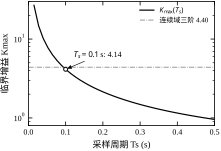
取 T_s=0.1 s、K=3，代入式 (38-27)：
D(z)=z^2-1.67825z+0.950154 \tag{38-29}
按式 (38-13) 逐条核对：
三条全过，判稳。由式 (38-14)，二阶系统还需检查 |b_0|>|b_1|，其中
b_0=a_0^2-a_2^2=0.902793-1=-0.097207,\qquad b_1=a_0a_1-a_2a_1=0 \tag{38-30}
|b_0|=0.0972>|b_1|=0，条件成立。求解式 (38-29) 得 z=0.839125\pm\mathrm{j}0.496007，模 0.974758，小于 1，与判据结论一致。
这个结果有一个值得注意的细节：连续域同一对象在 K=3 时闭环为 s=-1\pm\mathrm{j}5.385，把它按 z=\mathrm{e}^{sT_s} 采样应当得到 0.776784\pm\mathrm{j}0.464045，模 0.9048；而真实的离散闭环是 0.839125\pm\mathrm{j}0.496007，模 0.9748。两者的角度几乎相同（0.5339 与 0.5385 rad，折合 5.339 与 5.385 rad/s，差 0.9%），模却差了一大截。把模换算回等效实部，\sigma=-\ln|z|/T_s：理想采样给 1.0，实际离散闭环只有 0.256；阻尼比则由 0.183 掉到 0.048。也就是说，零阶保持器几乎不动振荡频率，主要吃的是阻尼——它相当于在回路里插了 T_s/2=50 ms 的纯延迟，相位滞后在 5.4 rad/s 处正好是 0.05\times5.385\approx0.27 rad（15°），把极点往右推、把阻尼压到四分之一。
所以“离散系统的响应形态和连续一样，只是采样了一下”是错误直觉：这句话对频率成立，对衰减完全不成立。本例中振荡周期几乎不变（1.18 s 对 1.17 s），但振荡持续的时间差了近四倍，超调也要重新算。这也是“模拟调试通过、数字控制器上线就振”（§38.5.6）的机理：同一套增益，采样把阻尼吃掉，而人眼在示波器上先看到的正是阻尼。
把 z=(1+w)/(1-w) 代入式 (38-29)，两边乘 (1-w)^2，按 w 的降幂整理：
3.628404w^2+0.099692w+0.271904=0 \tag{38-31}
三个系数全正，二阶 Routh 表第一列为 (3.6284,\,0.0997,\,0.2719)，符号无变化，判稳——与 Jury 结论一致。
两条路径给出的中间量可以互相对照：式 (38-31) 的常数项等于 D(1)，二次项系数等于 (-1)^2D(-1)，一次项系数等于 2(a_2-a_0)。也就是说，Jury 的前两条必要条件与 w 多项式首末系数的符号是同一件事，只是表述不同。理解了这层对应，就不会再把两个判据当成两套互不相干的方法。
代入本例核对，三项都对得上：D(1)=1-1.678251+0.950155=0.271905，与常数项 0.271904 一致；D(-1)=1+1.678251+0.950155=3.628406，与二次项 3.628404 一致；2(a_2-a_0)=2(1-0.950155)=0.099690，与一次项 0.099692 一致。差在末位，来自打印时的四舍五入。
再往下走一步，还能核对根的映射。式 (38-31) 的根为 w=-0.013738\pm\mathrm{j}0.273410（实部为负，所以 z 在单位圆内），按 z=(1+w)/(1-w) 映射回去，模为 1.023458/1.049961=0.974758、相角为 0.27007+0.26351=0.53358 rad——与 §38.5.3 直接求根得到的 0.974758 与 0.5339 完全一致。两条路径不仅结论相同，连极点的数值都能对上，这才是真正意义上的交叉验证；只对“稳定/不稳定”三个字，两个都写错的实现也可能一致。
坑一：离散化方法不同，稳定域不同。 同一对象用 ZOH 与 Tustin 得到的 G(z) 分子不同，K_{\max} 也不同。控制器在嵌入式里实际执行的是差分方程，与设计时用的离散化方法必须一致；用 Tustin 设计、用前向差分实现，等于换了一个系统。
这个差别不是百分之几，而是定性的。以 T_s=0.1 s 为例，ZOH 给出
G_{\mathrm{zoh}}(z)=\frac{0.04683z+0.04381}{z^2-1.81873z+0.81873},\qquad K_{\max}=4.138
而 Tustin 给出
G_{\mathrm{tus}}(z)=\frac{0.02273z^2+0.04545z+0.02273}{z^2-1.81818z+0.81818}
后者的分子可以提出 (z+1)^2，闭环根在 K\to\infty 时趋于 z=-1（从圆内趋近）。数值验证：K=1000 时最大根模为 0.9962，K=10^5 时为 0.99996，始终小于 1。也就是说，用 Tustin 判稳会得出“任意增益都稳定”，而 ZOH 给出的是 4.14。原因在于 ZOH 如实反映了“执行器在一个周期内保持指令”这一物理事实，其等效延迟约 T_s/2；Tustin 只是一种数值积分规则，不建模保持环节。工程结论很明确：判稳必须用 ZOH（或精确延迟），Tustin 只用于把连续校正器转成差分方程。顺带一提，matched 方法在含积分环节时会因零极点增益不匹配而失败，不能作为默认选项。
坑二：采样周期不是常数。 现场的控制周期常被通信抖动拉长，T_s 从 1 ms 抖到 3 ms 时，等效延迟跟着变。按表 38-4 的规律，T_s 从 0.08 s 增到 0.12 s（+50%），K_{\max} 从 5.14 掉到 3.47（-32\%）；增到 0.15 s 时只剩 2.81。这个敏感度与“多加一个 50 ms 延迟”同量级。工程上应按最长实际周期（而非平均值）核算稳定域，并把周期抖动算进安全系数：若周期可能抖动 \pm30\%，按 1.3T_s 算出的 K_{\max} 才是可信的上界。
§38.5.1 用的对象是纯二阶，没有执行器滞后，因此 T_s=0.1 s 时的 K_{\max}=4.14 与连续域的 4.40 相差不大。换成 §38.4.2 的三阶对象（带 50 ms 执行器滞后），结论就完全不同。
T_s=0.1 s、ZOH 离散后
G(z)=\frac{0.020493z^2+0.050954z+0.006921}{z^3-1.954066z^2+1.064869z-0.110803}
取 K=2，闭环特征多项式为
D(z)=z^3-1.91308z^2+1.166778z-0.096960
三个根为 0.9075\pm\mathrm{j}0.4065 与 0.0981，最大模 0.9944，贴着单位圆。按 Jury 判据逐条核对：D(1)=0.1567>0；(-1)^3D(-1)=4.1768>0；|a_0|=0.0970<1。再算 b 行：b_0=-0.9906、b_1=1.7999、b_2=-0.9813，|b_0|-|b_2|=0.0093；c 行给出 |c_0|-|c_1|=0.0016。所有条件都过，但后两级裕度已经小到小数点后第三位——这正是 Jury 判据“分级裕度”的实用价值：它不只回答“稳不稳”，还告诉你“离边界还有几层”。
把这个结构在 T_s=0.1 s 下的临界增益扫出来，只有 K_{\max}=2.144，比连续域的 4.40 低了 51%。更严重的是：§38.8 推荐的工作点 K=2.2，在连续域还有 50% 余量，采样后已经越界（K=2.2 时最大根模 1.0022）。同一套增益，模拟调试通过、数字控制器上线就振，原因就在这里——采样把 ZOH 的 T_s/2=50 ms 等效延迟叠加到原有的 50 ms 执行器滞后上，延迟翻倍，稳定域腰斩。
这条结果也给 §38.10.3 的采样周期选择提供了硬依据：T_s 不是“越小越好”的原则性口号，而是可以直接换算成 K_{\max} 的设计变量。本例若要求 K\ge2 且保留 50% 余量，T_s 必须降到 0.05 s 以下。
越界幅度也值得换算成时间。K=2.2 时最大根模 1.0022，对应的等效实部为 -\ln(1.0022)/0.1=-0.022 1/s，时间常数约 45 s——所以现场看到的是“几十秒里慢慢振大”，而不是“一上电就炸”。这种缓慢发散最容易被当成“外界干扰”，等到振幅明显时，往往已经运行了几个小时。
§38.4 已经暴露出一个矛盾：K=4.0 判稳，最大实部只有 -0.077，用它做位置环，操作工会说“这机器在飘”。判据回答的是“极点是否在我方阵地”，工程要的是“极点离边界有多远、衰减有多快”。本节把这条距离量化，并给出仍用代数判据完成量化的办法。
展开顺序是“定义—计算—边界”：先定义三种距离，再用 \sigma 位移把第一种算出来，最后说明哪一类指标代数判据根本给不了，必须换工具。
极点距离稳定边界有不止一种量法，三种在工程上各有用途。
实部余量 \sigma：定义为 -\max_i\mathrm{Re}\,s_i，即主导极点到虚轴的距离（单位 1/s）。它直接对应衰减时间常数 \tau=1/\sigma，是最常用的指标。\sigma 从 0.077 增到 0.737，衰减时间常数从 13 s 缩到 1.36 s，这是同一结构下“能用/不能用”的分界。
阻尼比 \zeta：主导极点与负实轴的夹角决定 \zeta=\cos\theta。它管的是超调，与 \sigma 是两个独立方向：极点可以离虚轴很远但阻尼很小（虚部大），响应衰减快但振荡剧烈。
增益余量：K_{\max}/K 的比值，管的是“参数漂到多少倍会失稳”。§38.1.1 的事故就是这一项不够。
三者不能互相替代。表 38-2 里 K=1.0 与 K=2.2 的 \sigma 相差 1.6 倍，但两者的 \zeta 分别只有 0.236 与 0.099，超调都在 46%–71% 量级；反过来，一个 \zeta=0.7 的系统若 \sigma 很小，超调合格但调节时间极长。工程验收通常要同时给 \sigma（或 t_s）与 \zeta（或 M_p）两个约束。
一对更极端的例子能说明这种独立性：极点 -0.2\pm\mathrm{j}0.6 与 -5\pm\mathrm{j}14.6 的阻尼比都约 0.32，超调同为 35% 上下，但前者的 \sigma=0.2、t_s\approx20 s，后者的 \sigma=5、t_s\approx0.8 s——同样的超调，快慢差 25 倍。只按 M_p 验收，前者会被放行，而它在现场表现为“晃二十秒才停”。
要求所有极点满足 \mathrm{Re}\,s<-\sigma（\sigma>0），等价于要求多项式
D_\sigma(w)=D(w-\sigma) \tag{38-32}
的全部根在左半平面。理由：若 D(s) 的根为 s_i，则 D(w-\sigma) 的根为 w_i=s_i+\sigma，实部为 \mathrm{Re}\,s_i+\sigma，小于零当且仅当 \mathrm{Re}\,s_i<-\sigma。
于是问题又变回普通判稳，只是系数要重算一遍。对三阶 a_3s^3+a_2s^2+a_1s+a_0，把 s=w-\sigma 代进去逐项展开：
a_3(w-\sigma)^3=a_3w^3-3a_3\sigma w^2+3a_3\sigma^2w-a_3\sigma^3
其余三项同理，合并同类项后得
\begin{aligned} a_3'&=a_3\\ a_2'&=a_2-3a_3\sigma\\ a_1'&=a_1-2a_2\sigma+3a_3\sigma^2\\ a_0'&=a_0-a_1\sigma+a_2\sigma^2-a_3\sigma^3 \end{aligned} \tag{38-33}
系数规律是二项式展开：(w-\sigma)^k 的 \sigma^j 项系数为 (-1)^j\binom{k}{j}，所以 \sigma 的奇次幂全带负号。a_0' 的最后一项是 (-\sigma)^3 给出的 -a_3\sigma^3，a_2' 的是 (-3\sigma) 给出的 -3a_3\sigma，这两处最容易被写成加号。
符号一旦写反，后果比算错数值更严重。若把式 (38-33) 全改成加号，实际算的是 D(w+\sigma)，它的根是 w_i=s_i-\sigma，条件是 \mathrm{Re}\,s_i<\sigma——对任何本来就稳定的系统、任何 \sigma>0 都成立，于是判据会告诉你“\sigma 想取多大都行”。这个错误不会报错、不会异常，只会给出一个乐观到荒谬的 \sigma_{\max}，而且它“通过”了所有检查。判别方法很简单：取 \sigma 等于你已知的最大实部绝对值（本例 0.4537），正确实现应当恰好卡在边界上；若算出远大于它的数，先查符号。
仍取三阶对象式 (38-18)，K=2.2，特征多项式 D(s)=0.05s^3+1.1s^2+2s+22。先用数值求根知道真值是 \sigma_{\max}=0.4537，再用判据验证这个数能否被算出来。
取 \sigma=0.4，按式 (38-33) 得
D_{0.4}(w)=0.05w^3+1.04w^2+1.144w+21.373 \tag{38-34}
三阶判据要求 a_2'a_1'>a_3'a_0'：左边 1.04\times1.144=1.1898，右边 0.05\times21.373=1.0686，成立，说明所有极点实部小于 -0.4。
取 \sigma=0.45，系数变为 0.05,\,1.0325,\,1.0404,\,21.318，左右两侧分别为 1.0742 与 1.0659，仍成立，但差距只剩 0.8%。
取 \sigma=0.46，左右两侧变为 1.0514 与 1.0654，不等式翻转，判不稳。可见 \sigma_{\max} 落在 0.45 与 0.46 之间，与数值求根的 0.4537 一致。
把这个数直接代回可以确认判据的零点与真实最大实部重合：\sigma=0.4537 时系数为 0.05,\,1.0319,\,1.0327,\,21.314，左右两侧之差仅 9.4\times10^{-6}，相当于 0.0009% 的相对误差。这也说明位移判据的精度上限不在判据本身，而在你愿意把 \sigma 试到第几位。
实际实现用二分而不是解析解，原因有两条。其一，四阶以上的余量是 \sigma 的高次多项式（三阶已是 \sigma 的三次），解析求根又把问题绕回了“解方程”；其二，二分只需要一个可靠的过零判据——余量在 \sigma_{\max} 两侧必然异号，而每算一次余量只需六七次乘加。工程精度到三位有效数字即可，20 次二分已把区间压到 10^{-6}，远超系数本身的误差。
这个例子的价值在于：整个过程中没有解过一次三次方程，只用加减乘除就把“最慢的模态衰减多快”算到了 1% 精度。图 38-8 把三个 \sigma 下的可行域画在同一张图上，纵轴是判据余量 a_2'a_1'-a_3'a_0'，横轴是 \sigma；曲线穿过零点的位置就是 \sigma_{\max}。
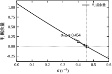
二阶欠阻尼系统有 t_s\approx4/(\zeta\omega_n)=4/\sigma（±2% 带）。这个 4 不是凑出来的：包络线按 \mathrm{e}^{-\sigma t} 衰减，落到初值的 2% 需要 \sigma t=\ln(1/0.02)=3.91，取整为 4；若按 ±5% 带（第 37 章的口径），系数是 \ln 20=3.00，同一个系统报出的 t_s 会小 23%。这就是 §38.12.4 强调“调节时间必须统一带宽”的原因——不是小数点问题，而是分子换了。
用 K=2.2 这一档具体算一遍：\pm2\% 给 4/0.4537=8.82 s，\pm5\% 给 3.00/0.4537=6.61 s。两条都“对”，差 25%（比 23% 略大，因为 4 已经把 3.91 向上取了整）。同一份阶跃曲线被两个人报成 8.8 s 与 6.6 s，验收会上就会争起来；解决办法只有一个：在合同里写清带宽，并在代码里把带宽做成显式参数。
三阶系统只要主导极点对清晰、第三极点足够远，同一近似仍可用。用表 38-2 的数据核对：
误差来自第三极点（-22 与 -21 附近）的残余分量：第三极点越远，近似越好。这条核对关系在工程上很实用——只要算出一个 \sigma，就能在几秒内估出调节时间，不必每次跑仿真。
反过来也有用：若合同要求 t_s\le0.5 s，则必须 \sigma\ge8 1/s，也就是所有极点实部小于 -8。把这个要求写成 D(s) 在 \sigma=8 处的位移不等式，直接得到对增益与结构的要求。第 43 章设计校正装置时，用的就是这个思路：先由指标反推需要的 \sigma 与 \zeta，再找能把这些极点摆到位的校正网络。
必须明确 Routh-Hurwitz 判据的三处盲区，否则容易过度使用。
第一，它不给超调。超调由阻尼比决定，而 \zeta 需要知道极点的虚部，Routh 表只给实部信息。“阻尼比大于 0.5”对应 s 平面上的一个楔形区域，边界是两条过原点的射线，不是垂直线，无法用实系数多项式的 Routh 表直接判定。工程上通常用两条路绕过去：数值求根后算 \zeta，或者用 §38.9 的 LMI 方法。
第二，它不给响应形状。闭环零点来自开环零点，它们不是特征多项式的根，判据不会把它们列为考察对象；但零点会让响应先反向再正向，或把超调抬高。带右半平面零点的系统可以完全稳定，现场却表现为“一给指令先往反方向走”，判据对此一无所知。
第三，它只对确定系数成立。系数来自辨识、有误差时，判据只回答“标称值稳不稳”，不回答“误差范围内是否都稳”。这一点在 §38.7、§38.9 展开。
还有一处严格说不算判据的盲区，而是使用方式的陷阱：先做零极点对消、再列特征多项式，会把不稳定的隐藏模态一起消掉。取 G=1/(s-1)、C=(s-1)/(s+2)，回路传函化简后是 1/(s+2)，闭环极点 -3，判据给出“稳定”；但被消掉的 +1 仍是真实存在的物理模态，只要有扰动进入对象，那一路信号就按 \mathrm{e}^{t} 增长，输出最终被它拖走。判据没有错，错的是喂给它的多项式已经不是原回路的特征多项式。工程上的防线很朴素：列式之前不要约分，1+GC 就用原始的有理式通分；若确实要化简，先把被消掉的因子单独记一笔，确认它本身稳定。
\sigma 位移只能判“竖直线左侧”，而超调要求对应的是“楔形内部”，两者形状不同。把常用指标翻译成 s 平面区域，可以看清这一点。
竖直线与楔形的交集，就是“既快又不振”的可行区。麻烦在于楔形的边界是过原点的射线，不是竖直线，没有任何实系数多项式的 Routh 表能直接判定“根都在楔形内”——因为旋转坐标会引入复系数，判据的前提被破坏。这就是 §38.6.5 第一条盲区的几何解释。
对本例三阶对象，两条约束能否同时满足？查表 38-5，K=0.3 时 \sigma=0.918，已经是全部工作点中最大的实部余量；要求 \sigma\ge1（即 t_s\le4 s 的近似条件）时，没有任何 K 能满足。而 M_p\le20\% 给出的上限是 K\le0.48。把两条放在一起，可行域为空。这个结论与 §38.8.3 用实测数据得到的一致，但这里只用两个公式就看出来了，不必逐点仿真。
工程上的操作顺序因此是：先用 \sigma 位移做竖直线筛选（快、精确），再用数值求根算 \zeta 做楔形筛选（慢一点，但没有近似），最后用仿真确认。三者都过，才进入调参。
K=0.3 这一档可以同时用两把尺子读：按锥判，\zeta=0.53 落在 20% 锥内，合格；按 \sigma\ge1 的线判，0.918<1，不合格。同一组极点得出两个相反结论——不是谁算错了，而是两个指标量的方向本来就不同，一个量角度、一个量横坐标。所以报告里必须写清用的是哪把尺子，否则“这个回路合格吗”会在评审会上变成一场没有交集的争论。
Routh 表把结论压成一个不等式，代价是隐藏了“哪个参数在起作用”。这一节把不等式拆开，逐个说明系数的物理来源、误差如何传导、以及哪些结构会让稳定域出现下界。
以本章的三阶回路为例：对象 10/(s(s+2)) 串一级执行器 1/(0.05s+1)，闭环特征多项式为
D(s)=0.05s^3+1.1s^2+2s+10K
四个系数各有明确出处：
这个对应关系解释了一个常见现象：调增益只动 a_0，稳定边界却由 a_1 与 a_2 的配合决定。所以“为什么增益不能再大”的答案往往不在增益本身，而在时间常数——执行器慢了、滤波器加了，边界自然下移。
三阶条件 a_2a_1>a_3a_0 还可以两边同除 a_3a_2，写成两个“频率平方”的比较：
\frac{a_1}{a_3}>\frac{a_0}{a_2} \quad\Longleftrightarrow\quad 40>\frac{10K}{1.1} \tag{38-19a}
左边 a_1/a_3=2/0.05=40 只由对象的速度项与执行器时间常数决定，是一个结构常数（量纲 \mathrm{s}^{-2}，开方后 6.32 rad/s）；右边 a_0/a_2=10K/1.1 随增益线性增长。稳定条件因此可以读成一句话：增益把“工作频率的平方”推高，一旦超过结构常数就不稳。这也正好解释了边界频率公式 \omega_{osc}=\sqrt{a_0/a_2}（式 38-20）——边界处两者相等，\omega_{osc} 就是那个结构常数的开方。四阶、五阶没有这么整齐的读法，但只要 s^1 行的首元能写成“两个量之比”，就可以照此解释。
三阶结构的临界增益有显式表达：
K_{\max}=\frac{a_2a_1}{10a_3} \tag{38-35}
取对数再求偏导，得相对灵敏度
\frac{\partial\ln K_{\max}}{\partial\ln a_1}=1,\qquad \frac{\partial\ln K_{\max}}{\partial\ln a_2}=1,\qquad \frac{\partial\ln K_{\max}}{\partial\ln a_3}=-1 \tag{38-36}
也就是说，a_1、a_2 各偏 20%，K_{\max} 就偏 20%；a_3 偏 20%，K_{\max} 反向偏 17%。用式 (38-18) 的基准值验证（K_{\max}=4.4）：
这条 1:1 的传导关系有两个直接用途。第一，它给安全系数提供了量化依据：若系数不确定度为 \pm15\%，则 K_{\max} 的不确定度约为 \pm30\%（两个系数叠加），取 50% 的安全系数刚好覆盖。第二，它说明“边界随系数连续变化”，因此可以用小范围扫描代替解析推导。
比“系数偏 20% 会怎样”更贴近现场的问题是：到底哪个系数在变。三个系数里，a_1 由对象决定，除非换设备几乎不动；a_2 与 a_3 都含执行器时间常数，而执行器的快慢恰恰随负载、油温、气源压力漂移。所以现场真正在漂的是 a_3 与 a_2，且两者同向：执行器变慢，两个一起变大，一个抬高分子、一个抬高分母，效果部分抵消。
沿执行器时间常数扫描（对象增益不动），得到
| 执行器滞后 \tau_a (s) | a_3 | a_2 | K_{\max} | 相对 50 ms |
|---|---|---|---|---|
| 0.02 | 0.020 | 1.04 | 10.40 | +136\% |
| 0.05 | 0.050 | 1.10 | 4.40 | — |
| 0.08 | 0.080 | 1.16 | 2.90 | -34\% |
| 0.10 | 0.100 | 1.20 | 2.40 | -45\% |
| 0.15 | 0.150 | 1.30 | 1.73 | -61\% |
| 0.20 | 0.200 | 1.40 | 1.40 | -68\% |
表里 a_2 只从 1.10 涨到 1.20，a_3 却翻了一倍，主导项是 a_3 的 -1 次方。\tau_a 从 50 ms 漂到 100 ms，K_{\max} 从 4.40 掉到 2.40，正好腰斩。这就是“同一套参数，夏天好用、冬天振”的机理：液压油黏度随温度变化，执行器时间常数能从 50 ms 漂到 100 ms 以上，而操作工看到的只是“阀门还是那个阀门”。
再加一级传感器滤波，情形更差（执行器固定在 50 ms）：
| 传感器滤波 \tau_s (s) | 阶次 | K_{\max} | 相对无滤波 |
|---|---|---|---|
| 0 | 三阶 | 4.40 | — |
| 0.02 | 四阶 | 3.09 | -30\% |
| 0.05 | 四阶 | 2.20 | -50\% |
| 0.10 | 四阶 | 1.55 | -65\% |
20 ms 的滤波——只是想把测量噪声压一压——就吃掉了 30% 的稳定域。这是“参数没动、边界自己跑了”最常见的来源：为了曲线好看加一级滤波，裕度就少了一截，而滤波器的时间常数往往不写进调参记录。
但这条公式只在结构不变、只动系数时成立。§38.1.1 的收卷机换工况时，惯性时间常数从 0.5 s、1 s 变为 1.5 s、3 s，分子上的超前零点 1+0.05s 却不变，整个多项式族已经换了，K_{\max} 从 3.30 掉到 1.04，不能用式 (38-35) 外推。判断灵敏度之前，先确认结构有没有变；结构一变，唯一可靠的做法是重算 Routh 表。
四阶以上的灵敏度不是常数的乘积关系，但“K_{\max} 随系数连续变化、且在高阶结构中对小系数更敏感”这一结论仍然成立。工程上建议直接做数值扫描：把每个系数在 \pm20\% 内取五点，共 5^4=625 组，一次批量算完。
图 38-9 给出三阶结构下 K_{\max} 对三个系数摄动的响应曲线，三条线的斜率恰好是 +1、+1、-1。
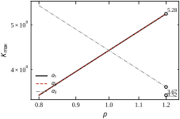
系数为零不是“不影响”，而是“结构缺了一块”。三种缺项的后果不同：
式 (38-35) 给出的区间是 (0,K_{\max})，默认下界为零。但对象含不稳定极点时，下界会大于零。取
G_p(s)=\frac{1}{s-1} \tag{38-37}
闭环特征方程为 s-1+K=0，根为 s=1-K，稳定条件 K>1。增益太小反而不稳，这一点在现场很有迷惑性：操作工发现系统抖，第一反应是“把增益调小”，结果直接把系统推进了不稳定区。
下界附近还有第二重危险：即便还在稳定域内，响应也慢得不能用。K=1.1 时极点为 -0.1，时间常数 10 s、t_s\approx40 s；K=2 时极点为 -1，t_s\approx4 s。也就是说，这个对象虽然 K>1 就稳，但真正可用的工作点在 K\ge2，稳定域的下界与可用域的下界不是同一个数。写档案时两者都要给，否则换个人按“K>1 即可”调试，会得到一台“稳但不动作”的设备。
含不稳定极点的对象在过程工业里并不罕见：放热反应的温度回路、某些压缩机喘振工况、倒立摆类机构的小车位置环。判稳时必须把下界一起算出来，并确认工作点在区间内部、且距两端都有余量。
右半平面零点不会让系统在“极点意义”上失稳，却会带来两个实际后果：一是阶跃指令下输出先反向，反向幅度与零点位置有关，通道间的同步性会被破坏；二是可用带宽被零点位置限制，增益不能再往上提。判断这类系统不能只看 K_{\max}，还要看反向幅度与带宽，详见 §38.11。
纯延迟 \mathrm{e}^{-T_ds} 不是有理函数，无法直接列 Routh 表。工程上的处理是 Padé 近似。二阶 Padé 为
\mathrm{e}^{-T_ds}\approx\frac{1-\frac{T_d}{2}s+\frac{T_d^2}{12}s^2}{1+\frac{T_d}{2}s+\frac{T_d^2}{12}s^2} \tag{38-38}
它把延迟变成一对零点与一对极点，代入式 (38-18) 后特征多项式升到五阶。用同一对象算出不同延迟下的 K_{\max}：
| 延迟 T_d (s) | K_{\max} | 相对无延迟 |
|---|---|---|
| 0 | 4.40 | — |
| 0.02 | 3.07 | -30\% |
| 0.05 | 2.13 | -52\% |
| 0.10 | 1.43 | -68\% |
延迟 50 ms（只相当于执行器滞后的量级）就让稳定域腰斩，这解释了为什么“实验室调好、现场振”是常态：实验室的管路短、通信快，现场的延迟在 20–100 ms 量级，正好落在最敏感的一段。
使用 Padé 近似有两个陷阱必须说明。第一，阶次越低越危险。一阶 Padé (1-T_ds/2)/(1+T_ds/2) 在右半平面引入一个零点，会低估相位滞后，给出偏乐观的 K_{\max}；二阶 Padé 的误差在 \omega T_d<1 时约 1%，边界频率处的相位误差约 3°。第二，Padé 只在低频段准确。若边界频率满足 \omega_{osc}T_d 接近 1，近似已经不可靠，应改用精确延迟配合数值扫根（本章代码里的 kmax_scan 就是这么做的）。
图 38-10 把延迟从 0 扫到 0.12 s 的 K_{\max} 曲线画出来，并标出“实验室可接受”与“现场常见”两段区间。可以看到曲线在 0.1 s 之后趋于平缓，说明延迟大到一定程度后，稳定域不再随延迟剧烈变化，但此时 K_{\max} 已不足 1.4，可用性极差。
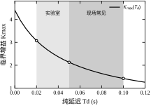
前面几小节回答的是“边界在哪”，现场更关心的是“工作点离边界多远”。这件事用一个数说不清，至少需要两个：
两者的走向并不一致。对本例三阶对象：
| K | K/K_{\max} | \sigma | 1/\sigma (s) | 实测 t_s (s) |
|---|---|---|---|---|
| 0.5 | 11\% | 0.865 | 1.16 | 3.84 |
| 1.0 | 23\% | 0.737 | 1.36 | 5.36 |
| 2.2 | 50\% | 0.454 | 2.20 | 8.45 |
| 3.0 | 68\% | 0.280 | 3.57 | — |
K=1.0 只用到临界增益的 23%，看上去“余量很足”，可 \sigma 已从 0.865 降到 0.737，调节时间从 3.8 s 拉到 5.4 s；K=2.2 恰好是 K_{\max} 的一半，按民间“留一半”的口径正合适，实测却要 8.5 s 才稳定到 \pm2\%。增益余量合格不代表动态合格，这是 §38.8.2 要专门拆开的误区。
反过来，\sigma 大也不代表超调小。\sigma 只管包络衰减，不管振荡次数；一个 \sigma=1、\zeta=0.1 的系统衰减很快，但超调仍有 70%。所以完整的余量描述是三个数：K_{\max}（边界位置）、K/K_{\max}（增益余量）、\sigma 与 \zeta（动态品质）。这三个数都不依赖仿真波形，全部可以由 Routh 表与求根直接算出，适合写进交付档案（§38.10.1）。
§38.7 给的是“边界在哪”，本节解决“工作点选哪”。核心是两条约束的联立：稳定约束给上限，性能约束给更紧的上限，两者取小。当两条约束没有交集时，答案不是继续调参，而是改结构。
对式 (38-18) 的三阶对象，稳定约束是 K<4.4。性能约束要看合同指标。设要求为 M_p\le20\%、t_s\le4 s（±2% 带），把表 38-5 的实测数据拿出来对照。
| 增益 K | \sigma (1/s) | M_p (%) | t_s (s) | 判定 |
|---|---|---|---|---|
| 0.3 | 0.918 | 13.8 | 3.40 | 两项均满足 |
| 0.5 | 0.865 | 26.3 | 3.83 | 超调超标 |
| 0.8 | 0.787 | 39.4 | 4.97 | 两项超标 |
| 1.0 | 0.737 | 46.1 | 5.36 | 两项超标 |
| 1.5 | 0.615 | 58.7 | 6.11 | 两项超标 |
| 2.2 | 0.454 | 71.4 | 8.45 | 两项超标 |
表 38-5 说明一件反直觉的事：在这条回路上，“响应更快”与“超调更小”不是同一个方向。K 从 0.3 增到 1.0，上升时间确实变短（K=1 时为 0.41 s），但超调从 13.8% 涨到 46.1%，调节时间反而从 3.40 s 拉长到 5.36 s。原因是这个对象的开环只有一个积分环节，增益提高使阻尼比单调下降，振荡成分主导了尾部。
用两个量可以把这件事说清楚。上升时间主要由自然频率 \omega_n 决定，调节时间主要由 \sigma=\zeta\omega_n 决定，超调只看 \zeta。本例 K 从 0.3 增到 2.2 时，\omega_n 从 1.73 增到 4.57（上升段更陡），\zeta 从 0.532 降到 0.099（振荡更强），\sigma 从 0.918 降到 0.454（尾部更长）。三个量朝三个方向走，说明“加增益”从来不是单一效果。工程上因此必须把 t_r 与 t_s 分开验收——它们不是同一个指标的不同说法，而是分别对应 \omega_n 与 \zeta\omega_n。
因此调参不能只盯“快不快”。工程上正确的顺序是：先用稳定判据划出 K 的上限，再用 M_p 划出更紧的上限，最后用 t_s 检查下限是否可行。三个条件都满足，才叫“调好了”。
“取 K_{\max} 的一半”是行业里流传最广的经验，它的依据是 §38.7.2 的灵敏度分析：系数误差 \pm15\% 会让边界漂 \pm30\%，留一半余量刚好覆盖。对本例，0.5K_{\max}=2.2。
但表 38-5 显示，K=2.2 的超调是 71.4%。50% 规则保证了“不会振散”，完全没有保证“能用”。这条经验在两类场合会严重误导：
正确的表述应该是：先把稳定边界算出来，用它做上界；再从性能指标反推工作点；两者的比值才是真正的安全系数，而不是反过来先定 50% 再算边界。
还有一层常被忽略：50% 规则里的 50% 是对系数不确定性留的，不是对未建模动态留的。§38.7.5 的数据显示，只加 20 ms 纯延迟，K_{\max} 就从 4.40 掉到 3.07；此时 K=2.2 的比值从 50% 升到 72%，余量只剩 28%。若延迟漂到 50 ms，K_{\max}=2.13，K=2.2 直接越界。同一个工作点，在“系数偏 15%”的场景下余量够用，在“多 20 ms 延迟”的场景下不够用，两件事不能混为一谈。
这条规则真正成立的场合有两个特征：对象以一阶惯性为主（无超调，性能约束本来就松），且不确定度只来自系数。一旦对象含积分、含欠阻尼对、或含延迟，50% 就只能当“上界的一半”来用，绝不能当“可以放心用”的通行证。
用 \sigma 与 t_s 的近似关系（§38.6.4）可以把性能指标翻译成对 \sigma 的要求。要求 t_s\le4 s，则
\sigma\ge\frac{4}{t_s}=\frac{4}{4}=1.0\ \mathrm{s^{-1}} \tag{38-39}
查表 38-5，K=0.3 时 \sigma=0.918，按近似式还差 8%；但实测 t_s=3.40 s 已进入 4 s 以内，说明近似偏保守。再看超调要求 M_p\le20\%：K=0.3 给出 13.8%，满足；K=0.5 已到 26.3%，不满足。两条约束夹出一个窄区间，大致 0.25<K<0.35。
把 K=0.3 的 \sigma=0.918 代入式 (38-39) 反算，t_s\approx4/0.918=4.36 s，与实测 3.40 s 有偏差——因为第三极点 -21 的快速衰减分量对尾部有贡献，使实测值偏小。近似式用于初选，最终必须以仿真或实测为准；这是本节唯一不能省的一步。
这里还有一个容易踩的坑：§38.4.1 的 \zeta=1/\sqrt{10K} 只对理想二阶成立。三阶以上要算 \zeta，必须先求根、取实部最大的那一对，再按 \zeta=-\mathrm{Re}\,s/|s| 计算。若图省事直接丢掉最高阶项做降阶（0.05s^3+1.1s^2+2s+10K\approx1.1s^2+2s+10K），得到的是 \zeta=1/\sqrt{11K}，结论会系统性偏乐观：
| K | 降阶法 \zeta | 降阶法 M_p (%) | 求根法 \zeta | 求根法 M_p (%) | 实测 M_p (%) |
|---|---|---|---|---|---|
| 0.3 | 0.551 | 12.6 | 0.532 | 13.9 | 13.8 |
| 0.5 | 0.426 | 22.7 | 0.389 | 26.5 | 26.3 |
| 0.8 | 0.337 | 32.5 | 0.281 | 39.8 | 39.4 |
| 1.0 | 0.302 | 37.0 | 0.236 | 46.6 | 46.1 |
| 1.5 | 0.246 | 45.0 | 0.162 | 59.7 | 58.7 |
| 2.2 | 0.203 | 52.1 | 0.099 | 73.1 | 71.4 |
原因不复杂：本例第三个极点约在 -21（由根之和 -a_2/a_3=-22 扣掉主导对即得），它与 0.05 这个系数一起，把 a_2 从 1 抬到了 1.1。降阶时保留 1.1，等于把这个快极点的贡献算进了阻尼，凭空多出 10% 的“阻尼”。K=2.2 时两种算法给出的超调预测相差 19.3 个百分点，而降阶法恰好落在“看起来还能接受”的一侧——这正是危险的来源。求根法六档的误差都在 1.7 个百分点以内。
所以工程上的顺序是：Routh 表判稳 → 数值求根 → 取主导对算 \zeta → 套二阶公式估 M_p → 仿真确认。前四步都是毫秒级计算，最后一步只用来验证，不用来试错。
若合同要求 t_s\le1 s、M_p\le5\%，则 \sigma\ge4、\zeta\ge0.69。把这两个要求画到 s 平面上是“垂直线右侧 + 楔形内部”的交集，而本例纯比例下所有极点都落在 \sigma<1 的区域，交集为空。此时无论 K 取何值都无解，必须加微分（提高阻尼）或加速度反馈（把极点往左推），这属于第 43、44 章的内容。
图 38-11 把 M_p、t_s、\sigma 三条曲线与稳定边界画在同一张图上，横轴是 K。三条曲线与指标线的交点围出的区间就是可行域；图中可行域极窄，直观解释了“为什么这台机器怎么调都不顺手”。
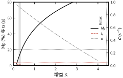
这五条的顺序本身就是流程：算边界 → 定工作点 → 用频率定位原因 → 换工况重算 → 改结构。现场最容易跳过的是第一条和第四条，因为两者都不产生“看得见的动作”。§38.1.1 的事故恰恰是跳过了第四条：换工况后没人重算，旧参数在新惯性下越界。
第三条的定量依据值得单独说。本例边界频率 \omega_{osc}=6.32 rad/s，折合 1.01 Hz。若实测抖动就在 1 Hz 附近、且幅值随增益单调增大，基本可以断定是增益过高触及边界；若抖动在 10 Hz 以上、幅值与增益关系不明显，应查采样与噪声；若落在 2–5 Hz 且随负载变化，优先怀疑机械间隙与共振。三种原因的处置方向完全不同：第一种降增益或加阻尼，第二种改采样率或加滤波，第三种只能改机械或加陷波器。方向用错，越努力越糟——把采样引起的抖动当成增益问题去降 K，只会让系统变慢而抖动照旧。
三条误判有个共同点：都拿判据的一个输出当成了全部证据。第一条把“阻尼够”当成“余量够”，第二条把“K 小”当成“离边界远”，第三条把“仿真环境”当成“现场”。辨识方法也因此统一：问一句“这个结论依赖了哪个尚未验证的假设”——若答案是系数准确，就做区间分析（§38.9.2）；若是结构完整，就做扫频（§38.10.4）；若是延迟已知，就把延迟实测一遍（§38.7.5）。
第一条还值得补一个自查动作：报告里同时写 M_p 与 K/K_{\max}。只要后者超过 0.8，即便 M_p 只有 5%，也应按“贴边”处理——因为超调是标称工况下的数，余量才决定它在扰动下还剩多少余地。
§38.2 的判据在数学上已经完整，工程上仍有四类改进空间：数值稳健性、区间系数、参数空间二维求解、以及与其他指标的联合约束。本节按“投入产出比”从高到低排列，前三类建议所有项目都用，第四类只在明确需要时使用。
这四类改进的采用顺序也有讲究：先做数值稳健性（成本最低，防的是“算错”），再做区间系数（防的是“模型不准”），最后才是二维求解与联合约束（防的是“指标不够”）。前两类属于“不做就可能出错”，后两类属于“做了更好”。
Routh 表是“除法链”，前一行的小误差会被后一行放大。三阶、四阶时无感，八阶以上时会出现“判稳结论随系数末位变化”的现象。三条改进措施按顺序做，可解决九成问题。
第一，系数归一化。把整个多项式除以 \max|a_i|，使所有系数落在 [0,1] 内。这一步不改变根，也不改变第一列符号，但能避免 10^{12} 与 10^{-3} 同表造成的溢出或下溢。要清楚它只防溢出、不防精度损失：取七个时间常数 0.05,\,0.02,\,0.01,\,0.005,\,0.002,\,0.001 s 串一个 1/(s+2)，得到一个七阶多项式，系数从 1.0\times10^{-13} 到 2.0，跨 13 个数量级；归一化之后第一列仍从 5.0\times10^{-14} 排到 1.0，跨的仍是 13 个量级。归一化只是把所有数一起缩小，量级差原封不动。
第二，逐行缩放。递推得到的每一行都乘以一个正数，使其首元接近 1。乘正数不改变符号变化次数，却能让后续除法稳定。实现上只需在每行开始处取该行首元的绝对值 \rho=\max(|c_1|,\epsilon)，整行除以 \rho。这一步才是真正抑制误差放大的措施：它把“除以一个可能极小的小数”换成“除以 1 附近的数”，每一行的相对误差不再被首元倒数量级地放大。代价是失去“第一列元素就是余量度量”这一直观（§38.2.3），所以调试阶段可以两种模式都跑，用未缩放的表读余量，用缩放后的表定结论。
第三，结果交叉验证。用 numpy.roots 求一次特征根，比较“右半平面根数”与 Routh 表的符号变化次数。两者不一致时，以数值求根为准，同时记录该组系数——它往往正好落在边界附近，是设计上需要回避的点。
为什么必须交叉验证？因为两条路径的数值性质不同。numpy.roots 走的是伴随矩阵特征值，属于后向稳定算法，误差不随阶次指数放大；Routh 表是一串没有选主元的除法，第 k 行的相对误差大致被前一行首元的倒数放大。系数一旦跨几个数量级（工程上很常见：10^{-3} 的 a_n 与 10^{3} 的 a_0 同表），舍入误差就能把“稳定”翻成“不稳定”。所以六阶以上不要只信一张手工表，至少做一次求根对照。
对离散情形，还有一个额外建议：优先走双线性 + Routh，而不是直接实现完整的 Jury 表。原因在 §38.2.7 已说明：Jury 的每一行都是行列式，实现的出错概率高，而双线性变换只需一次多项式代换。
辨识得到的系数总带误差。若只知道每个系数落在区间内
a_i\in[\underline{a}_i,\overline{a}_i],\qquad i=0,1,\ldots,n \tag{38-40}
要判断“区间内所有取值是否都稳定”，直接枚举是不可能的（连续无穷多组）。Kharitonov 定理给出了一个只查四个顶点的办法：构造四个顶点多项式
\begin{aligned} K_1(s)&=\underline{a}_0+\underline{a}_1s+\overline{a}_2s^2+\overline{a}_3s^3+\underline{a}_4s^4+\underline{a}_5s^5+\cdots\\ K_2(s)&=\overline{a}_0+\overline{a}_1s+\underline{a}_2s^2+\underline{a}_3s^3+\overline{a}_4s^4+\overline{a}_5s^5+\cdots\\ K_3(s)&=\overline{a}_0+\underline{a}_1s+\underline{a}_2s^2+\overline{a}_3s^3+\overline{a}_4s^4+\underline{a}_5s^5+\cdots\\ K_4(s)&=\underline{a}_0+\overline{a}_1s+\overline{a}_2s^2+\underline{a}_3s^3+\underline{a}_4s^4+\overline{a}_5s^5+\cdots \end{aligned} \tag{38-41}
四个顶点的取法有规律，不必死记：相邻的两个系数（偶、奇各一对）取同一端，隔一对再换端。K_1 从 (a_0,a_1) 取下界起，(a_2,a_3) 取上界，(a_4,a_5) 又回下界；K_2 与 K_1 完全反相；K_3、K_4 则是“奇偶错位”——K_3 让 a_0 取上界、a_1 取下界、a_2 取下界、a_3 取上界。这是最容易写错的地方：每个顶点都含全部阶次的项，不能只写偶数项或只写奇数项。
若这四个多项式都稳定，则区间内所有多项式都稳定；若有一个不稳定，则区间内存在不稳定的取值。 结论是充分必要的，前提是各系数区间相互独立。
工程用法很直接：把辨识结果写成 \pm20\% 的区间，代入式 (38-41) 得四个多项式，各列一次 Routh 表。四次表换来“整个区间都稳”的结论，比抽样扫描可靠得多。
以本章三阶对象为例。取每个系数 \pm20\%：a_3\in[0.04,0.06]、a_2\in[0.88,1.32]、a_1\in[1.6,2.4]，工作点 K=2.2 时 a_0=10K\in[17.6,26.4]。四个顶点算出来是：
| 顶点 | a_3 | a_2 | a_1 | 稳定 | \max\mathrm{Re}\,s | 该结构的 K_{\max} |
|---|---|---|---|---|---|---|
| K_1 | 0.06 | 1.32 | 1.6 | 是 | -0.303 | 3.52 |
| K_2 | 0.04 | 0.88 | 2.4 | 是 | -0.679 | 5.28 |
| K_3 | 0.06 | 0.88 | 1.6 | 否 | \mathbf{+0.099} | 2.35 |
| K_4 | 0.04 | 1.32 | 2.4 | 是 | -0.730 | 7.92 |
三个稳定、一个不稳定。按定理，整个区间内存在不稳定取值，“标称 K=2.2 稳定”这个结论在 \pm20\% 下不成立。最坏的是 K_3：执行器最慢（0.06）、阻尼项最低（0.88）、速度项最低（1.6）三者同时取到。它的临界增益是 0.88\times1.6/(10\times0.06)=2.35，比名义值 4.40 低 47%；其余三个顶点的 K_{\max} 分别是 3.52、5.28、7.92，全部高于 2.35。鲁棒临界增益要取四个里的最小值，不能取平均，也不能只看名义值。
这张表还说明一件事：不确定度不是“均匀地”削弱稳定域，而是由最不利组合决定。K_4 的 K_{\max} 高达 7.92，几乎是名义值的两倍——四个顶点里有一个“特别安全”，完全不影响结论；真正说话的是最坏的那个。工程上若只抽三五组系数做蒙特卡洛，很可能抽不到 K_3 这个角点，从而得出“区间内都稳”的错误判断。
最后一层要分清：这里的 K_{\max}=2.35 是鲁棒稳定的上界，与 §38.8.3 的性能上界 K\approx0.35 不是一回事。本例中 0.35 远低于 2.35，说明瓶颈在阻尼而不在鲁棒性——即便系数完全准确，回路也调不快。反过来，若性能要求 K\ge2，鲁棒上界 2.35 就只剩 15% 的余量，此时 \pm20\% 的不确定度直接决定项目成败。判断该往哪个方向改进，先看两条上界哪条更低。
两个限制必须记住：其一，区间必须独立。若两个系数来自同一个物理参数（例如 a_1 与 a_0 都随 K 变化），它们的变化是相关的，Kharitonov 会给出过于保守的结论；其二，它只判连续域。离散域有对应的棱形（prism）判据，形式更繁，工程上通常仍走“双线性变换 + Kharitonov”。
实际设计很少只调一个增益。常见的是“增益 + 时间常数”或“增益 + 延迟”两个参数同时变。这时可以在参数平面上直接画出稳定边界。
边界由两类曲线构成：一类是 s=0 代入特征方程（对应 a_0=0），另一类是 s=\mathrm{j}\omega 代入后令实部、虚部同时为零（对应极点穿越虚轴）。把这两类曲线画在 (K,T_d) 平面上，平面被分成若干区域，每个区域内的稳定性相同，取任一点验证即可。
对本例（式 38-18 加延迟），s=\mathrm{j}\omega 代入并用二阶 Padé 后得到的是含 K、T_d、\omega 的方程组，消去 \omega 即得边界曲线。图 38-10 的曲线正是这条边界在 K–T_d 平面上的投影。把 §38.7.5 的四个点连起来就是这条曲线的骨架：
| T_d (s) | 0 | 0.02 | 0.05 | 0.10 |
|---|---|---|---|---|
| 边界上的 K | 4.40 | 3.07 | 2.13 | 1.43 |
曲线单调下降且下凸：延迟从 0 到 0.05 s，K 掉了一半；从 0.05 s 到 0.10 s 又掉三分之一。设计时的工作方式是“先定延迟、再读上界”，而不是反过来。若延迟本身不可控（公网通信、多轴同步），则应按最坏延迟读边界，并把这个数写进配方表。
D-分解的价值在于它把“稳定域”从一维区间升级为二维地图，让设计者能看到“延迟增大时需要把增益降到多少”，而不是只知道当前点的余量。它还有一条常被忽略的性质：穿过 s=\mathrm{j}\omega 曲线时，右半平面根数改变 2（一对共轭根过轴），因此只要在每个区域取一个点判一次，就能给整个区域定性，不必逐点扫描。这也是为什么二维图只需要几条曲线就能说清全部结论。
换成 (K,\tau_a) 平面也是一样：把 §38.7.2 的六个点连起来，得到另一条边界，形状同样单调下凸。两条边界放在一起看，可以回答“同样多出 50 ms，加在执行器上还是加在纯延迟上，哪个更伤”——执行器从 50 ms 变到 100 ms，K_{\max} 掉到 2.40；额外 50 ms 纯延迟，掉到 2.13。后者更伤，因为一阶滞后还提供高频衰减，纯延迟不衰减、只叠加相位。这类比较用一维公式做不出来，只有画成二维图才直观。
Routh 表只管极点实部，若还要约束阻尼比，可以用 LMI：存在对称正定矩阵 \boldsymbol{P} 使
\begin{bmatrix} \sin\theta\,(\boldsymbol{AP}+\boldsymbol{PA}^{\mathsf{T}}) & \cos\theta\,(\boldsymbol{AP}-\boldsymbol{PA}^{\mathsf{T}})\\ \cos\theta\,(\boldsymbol{PA}^{\mathsf{T}}-\boldsymbol{AP}) & \sin\theta\,(\boldsymbol{AP}+\boldsymbol{PA}^{\mathsf{T}}) \end{bmatrix}\prec 0 \tag{38-42}
则闭环极点落在以负实轴为中心、半角 \theta 的锥内，对应 \zeta\ge\cos\theta。这类约束可以直接放进凸优化，与 H_\infty、H_2 指标联合求解，是第 57 章的主要内容。本节只需记住一点：代数判据给的是“点”，LMI 给的是“区域”，两者的分工在第五章会反复出现。
为什么楔形约束不能直接交给 Routh 表？因为要把“锥内”变成“左半平面”，需要把坐标旋转 \theta：令 s'=\mathrm{e}^{\mathrm{j}\theta}s，代入后多项式系数变成复数。Routh 判据只对实系数多项式成立，复系数情形第一列的“符号”已经没有意义（复数不能比大小），判据直接失效。Jury 判据同理。§38.6.6 说“Routh 表无法直接判定楔形”，根因就在这里。
两个常用指标换算成半角是：M_p\le20\% 对应 \theta\le62.9^\circ（\zeta\ge0.456），M_p\le5\% 对应 \theta\le46.4^\circ（\zeta\ge0.690）。半角只收紧 16.5°，本例的可用增益就从 K\approx0.4 退到 0.2 以下：K=0.2 时 \zeta=0.670、M_p\approx5.9\%，刚好贴在 5% 的锥边；再降到 K=0.1，\zeta 升到 0.974，\sigma 却只剩 0.972，调节时间反超 4 s。指标越严，两条约束越先打架——这就是 §38.8.3“可行域为空”在几何上的样子。
LMI 的代价是它只回答“可行/不可行”，不给 K_{\max}、不给 \omega_{osc}、也不给“还差多少”的显式表达式。工程上的合理分工是：先用本章判据算边界与频率（快、有解析式、可解释），再用 LMI 在边界内挑满足阻尼要求的点（慢、但能处理多指标）。反过来做，会得到一个“数学上最优、现场说不清”的控制器。
有五种“看起来更专业”的做法，投入产出比很低，值得先排除。
kmax_scan）或离散化，而不是加阶次——加阶次还会让多项式阶数虚高，反过来恶化数值条件。判断一项改进值不值得做，标准只有一条：它是否改变结论，或者是否改变“离边界多远”的判断。改变不了，就是工程上的装饰。
前三节讲的是“怎么算对”，本节讲“怎么落到设备上”。稳定性判据在工程上的落地不是写一个判稳函数，而是把“结构—系数—边界—工况—验收”这条链固定下来，并让每个环节都有可执行的检查动作。五段里最容易被跳过的是“工况”与“验收”：前者决定用哪一组系数，后者决定结论能不能被复核。
一个回路交付时，稳定性相关的内容必须包含四项，缺一项就算不合格：
第 4 项最容易被省略，也最致命。§38.1.1 的事故本质上是“只算了空载工况”。工程上应按“最不利组合”核算：最大惯性与最大延迟往往同时出现（满卷、长管路、通信拥塞），而不是分开出现。
以本章回路为例，四项填满后是这样一份记录：
这份记录的价值在于“任何人拿到它都能复算出同样的数”。只写“已调试稳定”的交接单，等于把结论和依据一起丢掉——三个月后换人，没人知道当时的边界在哪，也没人知道为什么选 2.2 而不是 3。
特征多项式的系数通常有三条来源，各自的误差量级不同，取法也不同。
无论哪条来源，都建议把误差直接代入 Kharitonov（§38.9.2）做一次全区间判稳。若四个顶点多项式中有不稳定的，说明“标称稳定”不可靠，必须降增益或改结构。
误差怎么取，有一个常被搞反的细节：应当按物理参数取误差、再传播到系数，而不是直接给所有系数一个笼统的 \pm20\%。以执行器时间常数为例，标称 0.05 s、误差 \pm20\%，则 a_3 同比例变化（0.04–0.06），而 a_2=1+2\tau_a 只在 1.08–1.12 之间动，相对误差不到 \pm2\%。代入式 (38-35) 得 K_{\max} 从 5.40（\tau_a=0.04）到 3.73（\tau_a=0.06），即 +23\% 与 -15\%，两个方向并不对称。
若图省事把所有系数统一按 \pm20\% 处理，得到的鲁棒边界是 2.35（§38.9.2），比按物理来源传播保守得多：前者把 a_2 也当成会偏 20%，而它实际上不可能偏那么多。保守不是错误，但过度保守会误导设计——它让人以为必须换执行器，其实只需把增益降 15%。这也是为什么 §38.9.2 的四个顶点必须用真实区间，而不是拍一个统一百分比。
把判据搬到 PLC 或运动控制器上，有三处容易出错。
采样周期取多少。 用表 38-4 的规律选：先按“T_s\le T_{dom}/10”给初值（T_{dom} 为主导时间常数的倒数），再用判据核算 K_{\max} 是否仍满足性能要求。本例中 T_s 从 0.02 s 增到 0.1 s，K_{\max} 从 20.13 掉到 4.14；若性能要求 K\ge2，则 0.1 s 已只剩一倍余量，应选 0.05 s 以下（对应 K_{\max}=8.14）。更快的估法是直接用式 (38-28b) 的 K_{\max}\approx0.4/T_s：T_s=0.1 s 给 4，T_s=0.05 s 给 8，与查表结果一致到一位有效数字。
采样周期还有一项常被忽略的误差：周期抖动。控制器按名义 T_s 设计，实际中断受总线负载影响会在名义值上下浮动。把 T_s=0.10 s 的回路按 0.08、0.12、0.15 s 三种实际周期重算，K_{\max} 分别是 5.14、3.47、2.81；名义周期下是 4.14，实际周期慢到 0.15 s 就只剩 2.81，降了 32%。所以“T_s 选得够小”之外还要保证抖动可控；若抖动不可控，设计时应按可能出现的最大周期核算，而不是名义值。
定点数还是浮点。 Routh 表本身只需加减乘除，定点可实现；但中间行的数值跨度可能很大（本例中最大系数 22、最小 0.05，比值 440），定点运算要预留足够位宽。实践中的做法是：判稳离线做（浮点），控制器在线只做限幅与保护，不在控制器里实时列 Routh 表。
临界如何处置。 判据输出应分三档而不是两档：稳定、临界（有零行、零首元，或第一列最小元素小于阈值）、不稳定。临界档触发时，控制器应把增益退回上一个已验证的配方，并报警，而不是继续运行。
计算给出的是标称值，现场必须验证。三步验证法按风险从低到高排列：
第一步，阶跃试验。 在最小增益下给 5% 幅值的阶跃，记录上升时间与超调。用第 37 章的口径算出 M_p、t_s，与仿真值对比。若实测超调比仿真大 10 个百分点以上，说明有未建模的延迟或滤波，先查这两项，不要急着调增益。
第二步，扫频试验。 用 0.1–10 Hz 的正弦扫频测开环或闭环频响，重点看相位在 \omega_{osc} 附近是否比模型多出 10° 以上。这一步能定量暴露延迟：相位多出的角度除以 \omega 就是额外延迟。第 41 章会给出完整做法，本章只需用它反推 K_{\max} 的修正值。
第三步，临界点试探（高风险，需审批）。 在空载、无工件、有人监护的条件下，逐步提高增益直到出现等幅振荡，记录临界增益 K_{u} 与振荡频率 \omega_{u}。把实测值与计算值对比：若 K_u 明显低于计算值，说明模型偏乐观；若 \omega_u 明显高于 \omega_{osc}，说明高频段还有未建模的极点。这一步只能在设备允许“振而不坏”的场合做，精密设备、带负载设备禁止做。
三步之间有明确的因果顺序：阶跃看时域指标是否与仿真一致，扫频看频域相位是否缺了一块，临界试探才是直接测边界。前两步任一不合格，都不该进入第三步——用一台模型还不准的设备去试临界点，等于把风险放大一倍。
阶跃幅值取 5% 有讲究。幅值太大（超过 10%）会激励饱和、回差、间隙等非线性，测出的超调不再反映线性模型；幅值太小则被噪声淹没。实用办法是先测静态噪声峰峰值，取其 3 倍以上作为阶跃幅值，再核对该幅值下执行器是否进入限幅。
扫频那一步的换算要记牢：相位差除以角频率就是额外延迟。本例边界频率 6.28 rad/s 处若实测相位比模型多 10°，折合 0.1745/6.28=27.8 ms 的纯延迟。按 §38.7.5 的表，20 ms 延迟已让 K_{\max} 从 4.40 掉到 3.07，27.8 ms 只会更低。10° 的相位差听起来不大，落到稳定域上就是三成的差距——这就是频域验证不能省的原因。
临界试探的结果这样读：实测 K_u 落在计算值的 0.8–0.9 倍之间属正常（未建模延迟总会让边界略低）；低于 0.7 倍，说明模型缺了一个显著滞后，应先补模型而不是继续调参；高于 1.1 倍，通常是模型过于保守，或计算时把某个时间常数取大了。三种情况的处置方向完全不同，所以第三步必须记录两个数：K_u 与 \omega_u，只记一个无法定位原因。
把现场最常见的五类失稳现象、判别依据与处置动作列成表 38-6。这张表比任何公式都更常用——现场没有时间重新推导，需要的是“看到这个现象，先查这个”。
| 现象 | 判别依据 | 最可能原因 | 处置 |
|---|---|---|---|
| 等幅振荡，频率接近 \omega_{osc} | 幅度不增不减 | 增益触及边界 | 降增益至 0.6 倍，复算边界 |
| 增幅振荡，周期数秒 | 幅度逐周期增大 | 增益超过边界，或有正反馈 | 立即停机，查符号与接线 |
| 高频抖动，频率远高于 \omega_{osc} | 幅值小、频率高 | 采样噪声、量化、微分放大 | 加滤波，降微分增益 |
| 低频摆动，周期远长于预期 | 幅值大、频率低 | 积分饱和、机械共振、阀门回差 | 抗饱和、查机械、加死区补偿 |
| 周期抖动，频率约 1/(2T_s) | 频率与采样率成整比 | 零阶保持、量化、混叠 | 提高采样率，加抗混叠滤波 |
表 38-6 的第一行与第三行最容易混淆。区分办法是看频率：Routh 边界给出的 \omega_{osc} 是唯一的（本例 6.32 rad/s），实测频率若在它附近，属于“增益过高”；若高出数倍，属于“噪声/采样”问题，此时降增益只会让响应变慢而不解决抖动。
第四行和第五行都不属于“线性失稳”，判据在这里帮不上忙，但频率仍是最好的线索。第五行的特征很硬：抖动频率恰好是采样率的一半（或它的整数分之一），换个采样周期频率就跟着变——这基本可以确诊，不需要再算特征根。第四行的周期往往比 \omega_{osc} 对应的周期长一个量级，而且幅度与指令幅值相关：小指令不出现，大指令才出现，说明是非线性环节在起作用，降增益无效，只能从机械或补偿入手（第 49 章用描述函数分析这类极限环）。
表 38-6 只回答“先查什么”，不回答“查完做什么”。任何一次处置之后都要复算边界并更新档案：加了一级滤波，K_{\max} 就得从头算；降了增益，余量百分比也要重写。现场最常见的二次事故，正是按表降了增益却没有重算，下一次凭“还差得远”的印象又把它加回去。
验收时应把以下三项写进测试报告：标称工况下的 M_p、t_s；最不利工况下的 K_{\max} 与余量；扫频实测的相位与模型相位的差值。三项齐全，才说明“这个回路的稳定性是被证明过的，而不是被试出来的”。
档案还要留一份“变更记录”：凡是改过执行器、滤波器、通信周期、机械传动的，都要重算 K_{\max} 并记录。经验表明，现场多数“突然自振”都能在变更记录里找到原因——某个 20 ms 的滤波被加上去，或者某个通信周期从 2 ms 改成了 5 ms。
如果条件允许，可以做一次“临界增益实测”作为最硬的验收证据。做法是：从工作点开始，按每次 10% 的步长提增益，每步等到响应稳定再提下一步，记录出现等幅振荡时的增益与周期。本例的预测值是 K_{\max}=4.40、周期 0.99 s；实测若给出 4.0–4.8 与 0.9–1.1 s，模型可信；若实测周期只有 0.3 s，说明回路里存在模型未包含的快速环节（通常是电流环或机械共振）。这项试验必须有人值守、有急停、有增益回退路径，且只在允许超调的设备上做——它验的是模型，不是设备极限。
档案的最小字段集建议固定为六项：回路编号、结构与系数、边界三件套（K_{\max}、\omega_{osc}、下界）、工作点与余量、工况表、变更记录。字段固定下来才能做跨设备对比——同一台机器两次大修之间的 K_{\max} 变化，往往比绝对值更有信息量。
变更记录要写到“谁、何时、改了什么、重算结果”四个要素。缺后两项的记录没有价值：改了滤波器却不算新边界，下一次自振时照样找不到原因。
把本节内容压缩成十条，交付前逐条打勾。前八条是“算对”，后两条是“落地”：
十条里最容易漏的是第 6 条和第 7 条：两者都在“仿真看着没问题”的情况下埋雷，且只在现场才暴露。第 3 条最容易被跳过，因为“看起来都是正数”——但符号错一个，后面全部白算。
任何一种判据都有它的“管辖范围”。Routh-Hurwitz 与 Jury 判据的优点是解析性强、代价低，缺点也同样明确：只回答极点在哪一侧，其余一概不管。本节把这两面说清楚，并给出与相邻判据的分工。写法上按“优点—局限—边界—分工”四段展开，每一段都尽量给出可对照的数值，而不是只给判断。
第一，给的是区间而不是点。 数值求根只能回答“这组系数稳不稳”，Routh 表把 K 当符号后直接给出 K_{\max} 的解析式（式 38-35）。设计者拿到的不是一个“合格/不合格”的结论，而是“还能加多少”的数。以本例为例，K_{\max}=a_2a_1/(10a_3) 一行就算出 4.40，而数值扫描要在 0–5 之间试上几十个点才能逼近同一个数。
第二，不需要迭代，也不需要初值。 与数值优化、根轨迹绘制相比，Routh 表是确定性的有限步运算：n 阶多项式，n 行表，每行最多 n 次乘除。这对嵌入式实现、对“必须给出可复核过程”的场合（如安全仪表系统的验证）非常重要。
第三，顺带给出边界频率。 整行为零时，辅助多项式直接给出 \omega_{osc}。这个数在现场诊断中价值极高：它把“振了”变成“振在哪个频率”，从而区分增益过高、噪声放大、机械共振三类原因（表 38-6）。
第四，可以自然地扩展到区间系数。 Kharitonov 定理只需查四个顶点多项式，就能判定整个系数区间。这类“从点到域”的扩展是数值求根做不到的。
局限一：只判绝对稳定。 判据不给超调、不给调节时间、不给稳定裕度。一个“通过判据”的系统可能超调 70%（表 38-5 的 K=2.2），也可能对扰动极其敏感。
局限二：对系数误差敏感。 判据把系数当作精确值。系数来自辨识、有 \pm15\% 误差时，结论的不确定度可能达到 \pm30\%（§38.7.2）。若不做区间分析，容易得出“标称稳定、实际不稳”的结论。
局限三：不能直接处理纯延迟。 \mathrm{e}^{-T_ds} 不是有理函数，必须近似（Padé）或离散化。近似阶次不够会偏乐观（§38.7.5），而高阶 Padé 又会让多项式阶次虚高、数值变差。
局限四：高阶时数值不稳。 八阶以上，Routh 表的除法链会放大舍入误差，结论可能随系数的末位变化。必须配合归一化、逐行缩放与数值求根交叉验证（§38.9.1）。
局限五：只适用于线性定常系统。 时变参数、饱和、死区、回差、切换都会让“特征多项式”这个概念失效。含这些环节的系统要用描述函数（第 49 章）、相平面（第 48 章）或 Lyapunov 方法（第 52 章）。
表 38-7 给出“该用/不该用”的对照。判断标准只有一条：问题是否能写成“确定系数的多项式，问根在哪一侧”。能，就用本章判据；不能，就换工具。
| 场景 | 是否适用 | 说明 |
|---|---|---|
| 线性定常、已知传递函数、求增益区间 | 适用 | 本章主场景 |
| 数字控制器、已知 G(z) | 适用 | Jury 或双线性 + Routh |
| 系数含区间误差 | 适用（Kharitonov） | 要求区间独立 |
| 含纯延迟 | 有条件适用 | 需 Padé 或精确延迟扫根 |
| 含饱和、死区、回差 | 不适用 | 用描述函数或仿真 |
| 时变参数、增益调度 | 不适用 | 用 Lyapunov 或增益调度分析 |
| 需要阻尼比、超调约束 | 不适用 | 用 LMI（§38.9.4）或数值求根 |
| 只有实测频响、没有模型 | 不适用 | 用 Nyquist（第 39 章）直接判 |
表里没列出的两类情形值得单独提一句。多输入多输出系统：闭环稳定性仍由 \det(\boldsymbol{I}+\boldsymbol{G}(s)\boldsymbol{C}(s)) 的根决定，但这个行列式展开后是一个高阶多项式，系数没有明确的物理含义；此时 Routh 表只能当“验算工具”，设计与分析应改用奇异值或 \mu 分析（第 58 章）。分布参数系统（长管路、热传导、柔性梁）：特征方程含 \mathrm{e}^{-T_ds} 或双曲函数，从第一步起就不是多项式，本章方法写不下去，必须先做有限维近似，或直接进频域。
还有一类“看起来能用、其实不该用”的情形：参数在大范围内慢变（增益调度）。若对每个调度点单独算一次 K_{\max}、再按最坏点设计，这是合法用法；但若把调度表当成一条连续曲线，用相邻两点的稳定性推断中间点，就错了——两个稳定多项式之间的插值不一定稳定。正确做法是在每个调度格点上验算，或直接用 Lyapunov 方法（第 52 章）。
本章之后的三章会给出三种“看图判稳”的方法，它们与 Routh 表的分工可以概括为：
实践中三者常一起用：先用 Routh 算出 K_{\max} 定边界，再用根轨迹看 K 增大时极点怎么走，最后用 Bode 裕度做验收。三者的结论应当一致；不一致时，先查延迟与未建模动态——它们最常造成“代数判据说稳、频域判据说不够”的分歧。
三者的定量对应关系可以用本例说清。K=2.2 时，Bode 算出的增益裕度是 2.00（6.02 dB），而 Routh 给出的 K_{\max}=4.40 恰好是工作点的两倍——增益裕度就是 K_{\max}/K，两者是同一个数的两种单位。边界频率也对得上：Bode 的相位穿越频率 \omega_g=6.325 rad/s，与 Routh 辅助多项式解出的 \omega_{osc}=6.325 rad/s 完全一致。这不是巧合，而是同一个代数条件在频域与时域的两副面孔。
Routh 给不出的是相位裕度。同一工作点的相位裕度只有 11.85^\circ，远低于工程常用的 45^\circ。也就是说：一个“判据通过、增益裕度 6 dB”的系统，相位裕度可能已经薄到一次扰动就振起来。这正是 §38.11.2 第一条局限的具体数字形态，也是验收必须同时看两个裕度的原因。
再看 K=0.3：增益裕度 23.33 dB、相位裕度 54.06^\circ，两项都健康。同一回路、同一判据，只因为工作点不同，两个裕度从“合格”变成“危险”。判据的结论永远是针对某个工作点的，脱离工作点谈“这个系统稳不稳”没有意义。
本章的代码分两个文件，职责分开：code/ch038_sim.py 只做计算并打印数值，code/ch038_figs.py 只负责把正文引用的 11 张图画出来。两者都复用全书公共库 simlib.py 与 styles/ 下的绘图样式，因此换一台机器运行，曲线的线型、字号、导出格式与全书其余章节完全一致。
运行方式（Windows，已装好 py311 环境）：
"D:\Anaconda3\envs\py311\python.exe" code\ch038_sim.py
"D:\Anaconda3\envs\py311\python.exe" code\ch038_figs.py第一条命令输出七组数值，分别对应 §38.4–§38.8 的表格与结论；第二条命令在 figs/ch038/ 下生成 11 组 SVG 与 PDF。依赖只有 numpy、scipy、control 三个包，不需要额外的符号计算库——这正是本章判据的价值：全程只用四则运算。
代码与正文式 (38-6) 一一对应。设第 i-1 行首元为 a_{i-1,1}，则第 i 行第 j 个元素为
a_{i,j}=\frac{a_{i-1,1}\,a_{i-2,j+1}-a_{i-2,1}\,a_{i-1,j+1}}{a_{i-1,1}} \tag{38-43}
实现时有三个细节必须写进代码，否则数值上会出错：
eps 这个参数容易被误解，它并不是判稳阈值，而是首元为零时的“替身”：一旦首元的绝对值小于 eps，代码就用 eps 顶替它把递推做下去，同时在 flags 里记一笔 epsilon=True。归一化之后所有系数不超过 1，取 10^{-10} 意味着只有比最大系数小十个数量级的首元才会被替换；本例三阶表里最小的首元是 0.5758，离它还差近十个数量级。需要动这个参数的场合是 §38.9.1 那种七阶对象——此时应当把它调到 10^{-14} 附近，并检查 flags['epsilon'] 有没有被误触发。
核心代码如下（完整版本见 code/ch038_sim.py，此处只保留递推与特殊情形）：
def routh_table(coeffs, eps=None):
"""构造 Routh 表：返回 (rows, first_col, flags)。"""
a = np.asarray(coeffs, dtype=float)
a = a / np.max(np.abs(a)) # 归一化，避免大小系数同表
n = len(a) - 1
if eps is None:
eps = 1e-10
rows = [a[0::2], a[1::2]] # 奇偶分列
rows[0] = np.pad(rows[0], (0, n + 1 - len(rows[0])))
rows[1] = np.pad(rows[1], (0, n + 1 - len(rows[1])))
flags = {"epsilon": False, "zero_row": False, "omega_osc": None}
for i in range(2, n + 1):
prev, cur = rows[i - 1], rows[i - 2]
pivot = prev[0]
if abs(pivot) < eps: # 情形一：首元为零
flags["epsilon"] = True
pivot = eps
new = [(pivot * cur[j + 1] - cur[0] * prev[j + 1]) / pivot
for j in range(n + 1 - i)]
new = np.array(new + [0.0] * (n + 1 - len(new)))
if np.all(np.abs(new) < 1e-12 * max(1.0, np.max(np.abs(cur)))):
flags["zero_row"] = True # 情形二：整行为零
k = n - (i - 1)
powers = np.arange(k, -1, -2)
aux = np.zeros(k + 1)
aux[k - powers] = prev[:len(powers)] # 辅助多项式
pure = [r for r in np.roots(aux) if abs(r.real) < 1e-9]
if pure:
flags["omega_osc"] = float(abs(pure[0].imag))
new = np.pad(np.polyder(aux), (0, n + 1 - len(np.polyder(aux))))
rows.append(new)
first = np.array([r[0] for r in rows])
return rows, first, flagsrouth_report 在此基础上数第一列符号变化次数，并把“存在零行/零首元”标为临界，返回 stable、rhp、omega_osc 三个量。§38.4.4 的 1.414 rad/s 与 §38.4.2 的 6.3246 rad/s 都由这段代码直接给出，不是手填。
这段代码有三行值得单独解释，它们分别对应三个真实的坑。
rows = [a[0::2], a[1::2]]。这是“奇偶分列”最直白的写法：第一行取下标 0、2、4…，第二行取 1、3、5…。手算时容易把第二行写成“其余系数顺次排列”，结果整张表错位。
零行判定用相对阈值。1e-12 * max(1.0, max|cur|) 而不是与 0 直接比较——浮点递推几乎不会得到精确的 0，若用绝对判据，真正的零行会被漏掉，表继续算下去得到一堆无意义的数。阈值取相对量，才能同时适配 10^{-3} 与 10^{3} 两种量级。
辅助多项式的两处下标。k = n - (i - 1) 给出上一行对应的 s 幂次，aux[k - powers] = prev[:len(powers)] 把系数按降幂放到正确位置；数据必须取自 prev（上一行）而不是 cur。这两处是实现中最常见的两个错误：取错行时辅助多项式少了一阶，索引方向写反时系数顺序颠倒，症状都是 \omega_{osc} 算成一个明显偏小的数（0.158 或 0.707），而正确值是 6.3246 与 1.4142。判据实现是否正确的锚点，就是这两个频率。
离散部分只保留两个函数。jury_report 按式 (38-13)、式 (38-14) 逐条检查，返回每条条件的过与不过；bilinear_w 做式 (38-15) 的多项式代换，把结果交给 routh_report 复核。两个函数合计不到三十行，却覆盖了离散判稳的全部需求：n\le3 时用前者，n\ge4 时用后者，两者互为对照。
def jury_report(coeffs):
"""Jury 判据：coeffs 降幂，返回各条件与最大根模。"""
a = np.asarray(coeffs, dtype=float)
a = a / a[0]
n = len(a) - 1
asc = a[::-1] # 升幂
conds = [("D(1)>0", np.polyval(a, 1.0) > 0, np.polyval(a, 1.0)),
("(-1)^n D(-1)>0", (-1) ** n * np.polyval(a, -1.0) > 0,
(-1) ** n * np.polyval(a, -1.0)),
("|a0|<an", abs(asc[0]) < abs(asc[-1]), abs(asc[0]) - abs(asc[-1]))]
row = asc.copy()
while len(row) > 2:
m = len(row) - 1
b = np.array([row[0] * row[k] - row[m] * row[m - k] for k in range(m)])
conds.append((f"row{len(conds)}", abs(b[0]) > abs(b[-1]),
abs(b[0]) - abs(b[-1])))
row = b
return {"stable": all(c[1] for c in conds), "conds": conds,
"max_root": float(np.max(np.abs(np.roots(a))))}
def bilinear_w(coeffs):
"""z=(1+w)/(1-w)，两边乘 (1-w)^n，返回 w 的降幂系数。"""
a = np.asarray(coeffs, dtype=float)
n = len(a) - 1
total = np.zeros(n + 1)
for k, ak in enumerate(a): # 第 k 项 z^(n-k)
p = np.polymul(np.poly1d([1, 1]) ** (n - k), np.poly1d([-1, 1]) ** k)
total += ak * p.c
return totalbilinear_w 里指数配对是最容易写反的地方：z^{n-k} 应配 (1+w)^{n-k}(1-w)^{k}。写反后三个系数中一次项符号会翻转，routh_report 立刻给出“不稳定”，与 Jury 结论矛盾——这正好可以作为实现正确性的自检。
jury_report 有两处设计是刻意的。先按 a_n 归一化，否则 |a_0|<a_n 与后续递推都受量级影响，同一系统换个单位就可能判反。每条条件同时返回布尔值与差值，因为“过”与“差一点过”在现场含义完全不同：三阶对象 K=2 时 b 行裕度 0.0093、c 行 0.0016，说明离边界只差千分之几；只看一个 True，会把这种“贴着边界飞”的状态当成安全。
第三只眼是 max_root。它不参与判据，只作为独立核对：若 Jury 全部条件为真而 \max|z|>1，一定是实现错了；反之若条件为假而 \max|z|<1，同样说明某条递推写错。本章 K=2 时 \max|z|=0.9944，与 b、c 两行的小裕度互相印证。
表 38-8 把程序输出与正文位置对应起来，方便逐条复核。
| 程序输出 | 正文位置 | 关键数值 |
|---|---|---|
| 三阶 K_{\max}（扫描 vs 解析） | §38.4.2、式 (38-19) | 4.4000 / 4.4000 |
| 边界振荡频率 | §38.4.2、式 (38-20) | 6.3246 rad/s |
| 四阶 K_{\max} | §38.4.3、表 38-3 | 3.0895 |
| 整行为零的 \omega_{osc} | §38.4.4、式 (38-24) | 1.4142 rad/s |
| \sigma 位移判定与二分 | §38.6.3、表 38-5 | \sigma_{\max}=0.4537 |
| 六个采样周期的 K_{\max} | §38.5.2、表 38-4 | 40.13 / 20.13 / 8.14 / 4.14 / 2.14 / 0.96 |
| Jury 与双线性复核 | §38.5.3–§38.5.4 | 判稳一致 |
| 四档延迟下的 K_{\max} | §38.7.5 | 4.40 / 3.07 / 2.13 / 1.43 |
| 六档增益的时域指标 | §38.8、表 38-5 | M_p 13.8%–71.4% |
数值扫描与解析解在小数点后四位一致，说明两套实现没有共享同一个错误：解析式只依赖三阶不等式，扫描则直接对闭环极点求根，两条独立路径互相校验。
复核时按表的顺序自上而下走，任一行对不上就停下——后面的行都以它为前提，继续往下看只会在错误上叠加错误。表末两行（延迟档位与增益档位）最容易被当成“附录”跳过，其实它们才是唯一能与时域实测对上号的两行。
表里最该每天看的是“边界振荡频率”这一行。K_{\max} 只在设计阶段用一次，而 \omega_{osc} 可以现场量：把增益慢慢推上去，记下等幅振荡的周期，与 2\pi/\omega_{osc} 对照。本例 6.3246 rad/s 对应周期 0.993 s，实测若在 0.9–1.1 s 之间，就可以确认模型阶次与时间常数的量级没错；若差出一倍，多半是漏了某个环节，而不是判据算错。
三组交叉核对的性质各不相同，出问题时指向也不同。解析式 vs 扫描对不上，说明解析条件推错了（顺序、符号、适用阶次）；Jury vs 双线性对不上，说明离散多项式的系数或 z^{k} 的配对写错了；\sigma 位移 vs 时域 t_s 差得超过 20%，说明主导极点假设不成立，此时应当去看第三个极点离虚轴有多远，而不是继续调 \sigma。三者都建立在“两条独立路径”上，因此任一组对不上时，先怀疑实现，再怀疑数据——反过来做，往往会把一个明确的 bug 归咎于“现场情况复杂”。
scipy.signal 的 tf2ss 替代 control做闭环：前者不处理代数环，遇到纯积分环节容易报奇异。本例对象含 1/s，误用后会得到“矩阵奇异”的报错，而不是一个错误的结果——这算是幸运的情形，更麻烦的是阶次降低后仍能算出数。metrics_of 默认取 30 s，只适用于 K\le2.2。一条经验规则：仿真时长至少取 5/\sigma_{\min}，K=4.39 时这已是 2600 s，画图时应当截断显示，而不是截断计算。ch038_figs.py 里的每条曲线都重新调用 ch038_sim.py 的函数取值，不读缓存，保证图与表永远同源。若为了提速把数值存成中间文件，至少要在文件名里带上系数或参数，否则改了结构却仍读旧数据，图上会出现“说不通”的拐点。换一台设备，只需改三处，其余逻辑不动：
plant() 与 char_poly() 里的 10/[s(s+2)] 换成自己的传递函数；若对象是“增益 + 两个惯性”，写成 K_p/[(T_1s+1)(T_2s+1)]，用 np.polymul 展开，不要手算系数。kmax_scan 的 hi 默认 60，只适合本例这种 K_{\max}\approx4 的对象。对象增益很小时要同步下调 lo；含延迟、阶次升高时要放大 hi，否则扫描会返回 inf 而不是边界。加延迟只需一行：ct.pade(Td, 2) 串进开环，阶次自动升 2。注意两点：Padé 分子首项为正，不要手工改符号；阶次升高后，归一化与 \varepsilon 的取值比原来更重要（§38.9.1）。
扫描返回 inf 时不要当成结论。kmax_scan 返回无穷只有两种可能：hi 不够，或者对象确实是无上限的二阶结构。区分办法很直接——把 hi 放大十倍再扫一次，若仍为 inf，再去看阶次：三阶以上的连续闭环不可能真正无上限（a_0 增大时 a_2a_1>a_3a_0 必然被破坏），所以此时要么阶次真的只有二阶，要么模型漏了环节。移植后还有一件事容易漏：把新对象的 K_{\max}、\omega_{osc}、下界写进档案的同一行（§38.3.7），并注明它是在哪个 T_s、哪个执行器时间常数下算的。
做离散设计时，ct.c2d(..., method="zoh") 是唯一可用来“定边界”的方法；Tustin 只适合做交叉核对，不适合定 K_{\max}——§38.5.5 的无穷大就是反例。
改完代码，先看三行输出再谈结论：
三行都对，说明实现没坏；任何一行变了，先查代码，不要急着用物理解释偏差。实现这类判据时最常见的三类错误——辅助多项式取错行、索引方向写反、双线性的指数配对写反——都会直接打乱这三行，所以它们是最省时间的自检项。
本章给出的判据解决的是“已知模型、问稳定域”这一类问题。下一章换一个入口：不写特征多项式，只测开环频率响应，用 Nyquist 曲线包围 (-1,\mathrm{j}0) 的次数判断闭环稳定性。两条路在理论上等价，工程上互补——前者适合设计阶段算参数，后者适合调试阶段用实测数据验证。